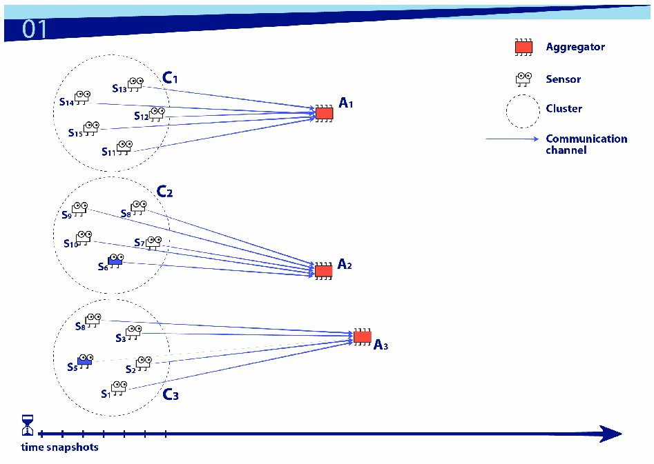
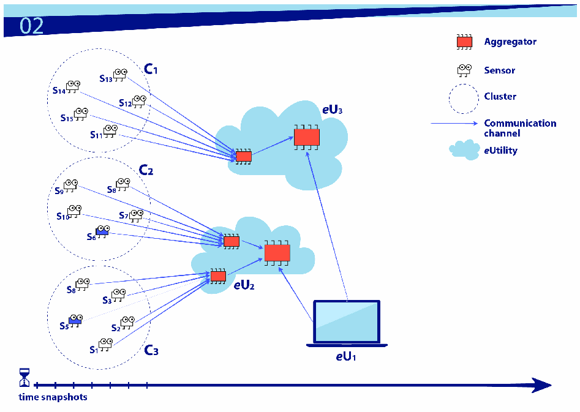
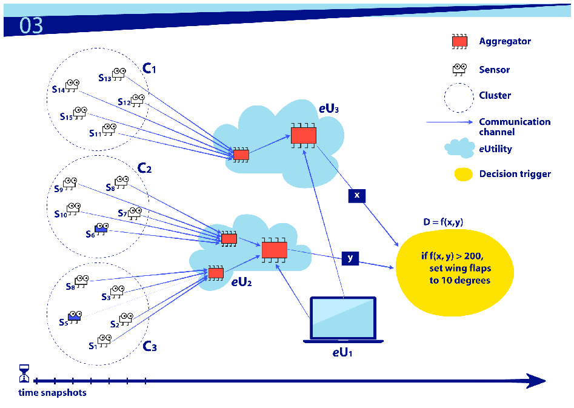
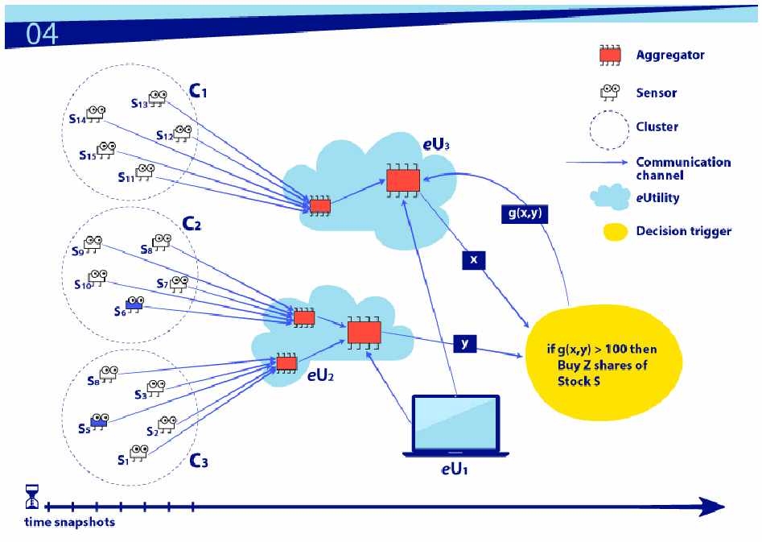
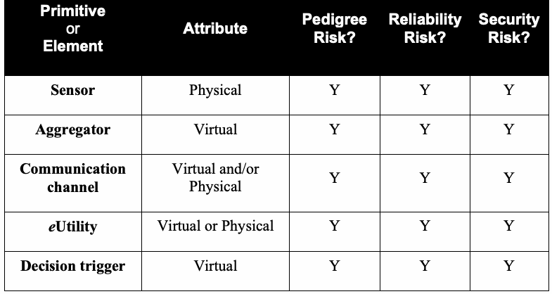
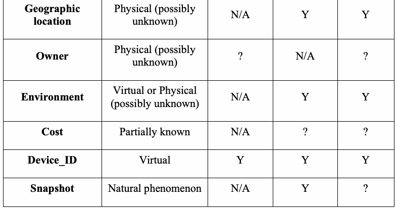

NIST Special Publication · PDF 原文抽出
Networks of 'Things'
「モノ」のネットワーク
NIST SP 800-183（Networks of 'Things'）の英文と日本語訳を段落ごとに並べた閲覧用ページです。分散システムに共通する5つの基本プリミティブを説明し、IoTを含む「モノのネットワーク」の基礎概念と構成要素を示します。 翻訳は非公式です。要件の確認にはNIST の正式版 PDFを参照してください。
PDF から抽出した原文は原本との照合待ちです。
本文の数式はLaTeXの構造からKaTeXで表示しています。
NIST Special Publication 800-183
NIST特別刊行物800-183
Networks of ‘Things’
「モノ」のネットワーク
Jeffrey Voas
Jeffrey Voas
This publication is available free of charge from: http://dx.doi.org/10.6028/NIST.SP.800-183
本出版物は以下から無料で入手できる：http://dx.doi.org/10.6028/NIST.SP.800-183
C O M P U T E R S E C U R I T Y
コンピュータセキュリティ

NISTのロゴ。画像内に「National Institute of Standards and Technology（米国国立標準技術研究所）」および「U.S. Department of Commerce（米国商務省）」と記載。
NIST Special Publication 800-183
NIST特別刊行物800-183
Networks of ‘Things’
「モノ」のネットワーク
Jeffrey Voas
Jeffrey Voas
Computer Security Division Information Technology Laboratory
コンピュータセキュリティ部門 情報技術研究所
This publication is available free of charge from: http://dx.doi.org/10.6028/NIST.SP.800-183
本出版物は以下から無料で入手できる：http://dx.doi.org/10.6028/NIST.SP.800-183
July 2016
2016年7月
米国商務省の紋章
U.S. Department of Commerce Penny Pritzker, Secretary
米国商務省 ペニー・プリツカー長官
National Institute of Standards and Technology
米国国立標準技術研究所（NIST）
Willie May, Under Secretary of Commerce for Standards and Technology and Director
ウィリー・メイ、商務次官（標準技術担当）兼所長
Authority
権限
This publication has been developed by NIST in accordance with its statutory responsibilities under the Federal Information Security Modernization Act (FISMA) of 2014, 44 U.S.C. § 3541 et seq., Public Law (P.L.) 113-283. NIST is responsible for developing information security standards and guidelines, including minimum requirements for federal information systems, but such standards and guidelines shall not apply to national security systems without the express approval of appropriate federal officials exercising policy authority over such systems. This guideline is consistent with the requirements of the Office of Management and Budget (OMB) Circular A-130.
本出版物は、2014年連邦情報セキュリティ近代化法（FISMA）、44 U.S.C. § 3541以下、Public Law（P.L.）113-283に基づく法定責務に従ってNISTが作成した。NISTは、連邦情報システムの最低要件を含む情報セキュリティ標準およびガイドラインを策定する責任を負う。ただし、これらの標準およびガイドラインは、国家安全保障システムに対する政策権限を行使する適切な連邦政府職員の明示的な承認がない限り、当該システムには適用されない。本ガイドラインは行政管理予算局（OMB）通達A-130の要件に整合している。
Nothing in this publication should be taken to contradict the standards and guidelines made mandatory and binding on federal agencies by the Secretary of Commerce under statutory authority. Nor should these guidelines be interpreted as altering or superseding the existing authorities of the Secretary of Commerce, Director of the OMB, or any other federal official. This publication may be used by nongovernmental organizations on a voluntary basis and is not subject to copyright in the United States. Attribution would, however, be appreciated by NIST.
本出版物のいかなる記述も、法定権限に基づき商務長官が連邦機関に対して義務的かつ拘束力のあるものとした標準およびガイドラインと矛盾するものと解釈してはならない。また、本ガイドラインは、商務長官、OMB長官、その他の連邦政府職員が有する既存の権限を変更する、またはそれに取って代わるものと解釈してはならない。本出版物は、非政府組織が任意に利用でき、米国内で著作権の対象ではない。ただし、出典を明記してもらえればNISTとしては幸いである。
National Institute of Standards and Technology Special Publication 800-183 Natl. Inst. Stand. Technol. Spec. Publ. 800-183, 30 pages (July 2016) CODEN: NSPUE2
米国国立標準技術研究所 特別刊行物800-183。米国国立標準技術研究所 特別刊行物800-183、30ページ（2016年7月）。CODEN：NSPUE2。
This publication is available free of charge from: http://dx.doi.org/10.6028/NIST.SP.800-183
本出版物は以下から無料で入手できる：http://dx.doi.org/10.6028/NIST.SP.800-183
Certain commercial entities, equipment, or materials may be identified in this document in order to describe an experimental procedure or concept adequately. Such identification is not intended to imply recommendation or endorsement by NIST, nor is it intended to imply that the entities, materials, or equipment are necessarily the best available for the purpose. There may be references in this publication to other publications currently under development by NIST in accordance with its assigned statutory responsibilities. The information in this publication, including concepts and methodologies, may be used by federal agencies even before the completion of such companion publications. Thus, until each publication is completed, current requirements, guidelines, and procedures, where they exist, remain operative. For planning and transition purposes, federal agencies may wish to closely follow the development of these new publications by NIST. Organizations are encouraged to review all draft publications during public comment periods and provide feedback to NIST. Many NIST cybersecurity publications, other than the ones noted above, are available at http://csrc.nist.gov/publications.
実験手順や概念を適切に説明するため、本文書では特定の商業主体、機器、または材料を特定する場合がある。このような特定は、NISTによる推奨または保証を意味するものではなく、また当該主体、材料、機器が目的に照らして必ずしも入手可能な最良のものであることを意味するものでもない。本出版物には、NISTが付与された法定責務に従って現在策定中の他の出版物への参照が含まれる場合がある。本出版物に含まれる情報（概念や方法論を含む）は、そうした関連出版物が完成する前であっても、連邦機関が利用できる。したがって、各出版物が完成するまでは、現行の要件、ガイドライン、手順が存在する場合、それらが引き続き有効である。計画および移行のために、連邦機関はNISTによるこれらの新しい出版物の策定状況を注意深く追うとよい。組織には、パブリックコメント期間中にすべてのドラフト出版物をレビューし、NISTにフィードバックを提供することを推奨する。上記に記載したもの以外のNISTサイバーセキュリティ出版物の多くは、http://csrc.nist.gov/publications から入手できる。
Comments on this publication may be submitted to: National Institute of Standards and Technology Attn: Computer Security Division, Information Technology Laboratory 100 Bureau Drive (Mail Stop 8930) Gaithersburg, MD 20899-8930 Email: iot@nist.gov
本出版物へのコメントは、以下に送付できる。米国国立標準技術研究所、宛先：コンピュータセキュリティ部門、情報技術研究所、100 Bureau Drive（Mail Stop 8930）、Gaithersburg, MD 20899-8930、電子メール：iot@nist.gov
All comments are subject to release under the Freedom of Information Act (FOIA).
すべてのコメントは、情報公開法（FOIA）に基づく公開の対象となる。
Reports on Computer Systems Technology
コンピュータシステム技術に関する報告書
The Information Technology Laboratory (ITL) at the National Institute of Standards and Technology (NIST) promotes the U.S. economy and public welfare by providing technical leadership for the Nation’s measurement and standards infrastructure. ITL develops tests, test methods, reference data, proof of concept implementations, and technical analyses to advance the development and productive use of information technology. ITL’s responsibilities include the development of management, administrative, technical, and physical standards and guidelines for the cost-effective security and privacy of other than national security-related information in federal information systems.
米国国立標準技術研究所（NIST）の情報技術研究所（ITL）は、米国の計量・標準インフラに対する技術的リーダーシップを提供することにより、米国経済と公共の福祉を促進している。ITLは、情報技術の発展と生産的な利用を促進するため、試験、試験方法、参照データ、概念実証の実装、技術分析を開発する。ITLの責務には、連邦情報システムにおける国家安全保障関連以外の情報について、費用対効果の高いセキュリティとプライバシーを実現するための、管理面、事務面、技術面、物理面の標準およびガイドラインを策定することが含まれる。
Abstract
概要
System primitives allow formalisms, reasoning, simulations, and reliability and security risk-tradeoffs to be formulated and argued. In this work, five core primitives belonging to most distributed systems are presented. These primitives apply well to systems with large amounts of data, scalability concerns, heterogeneity concerns, temporal concerns, and elements of unknown pedigree with possible nefarious intent. These primitives are the basic building blocks for a Network of ‘Things’ (NoT), including the Internet of Things (IoT). This document offers an underlying and foundational understanding of IoT based on the realization that IoT involves sensing, computing, communication, and actuation. The material presented here is generic to all distributed systems that employ IoT technologies (i.e., ‘things’ and networks). The expected audience is computer scientists, IT managers, networking specialists, and networking and cloud computing software engineers. To our knowledge, the ideas and the manner in which IoT is presented here is unique.
システムプリミティブにより、形式化、推論、シミュレーション、ならびに信頼性とセキュリティのリスクトレードオフを定式化し、論じることができる。本書では、ほとんどの分散システムに属する5つの中核プリミティブを提示する。これらのプリミティブは、大量のデータ、スケーラビリティの懸念、異種性の懸念、時間に関する懸念、および由来が不明で悪意を持つ可能性のある要素を伴うシステムによく当てはまる。これらのプリミティブは、モノのインターネット（IoT）を含む「モノ」のネットワーク（NoT）の基本構成要素である。本書は、IoTがセンシング、計算、通信、作動を伴うという認識に基づき、IoTについての根底的かつ基礎的な理解を提供する。ここで示す内容は、IoT技術（すなわち「モノ」とネットワーク）を用いるすべての分散システムに共通する。想定読者は、コンピュータ科学者、IT管理者、ネットワーク専門家、ならびにネットワークおよびクラウドコンピューティングのソフトウェアエンジニアである。筆者らの知る限り、ここで示す考え方とIoTの提示方法は独自のものである。
Keywords
キーワード
Internet of Things (IoT); Network of Things (NoT); reliability; security; trust; trustworthiness, sensors; big data; composability; distributed system.
モノのインターネット（IoT）、モノのネットワーク（NoT）、信頼性（reliability）、セキュリティ、信頼（trust）、信用性（trustworthiness）、センサー、ビッグデータ、合成可能性、分散システム。
Acknowledgment
謝辞
Appreciation is given to Matt Scholl, Dave Ferraiolo, Tim Grance, Irena Bojanova, Angelos Stavrou, Rick Kuhn, and Phil Laplante, for the encouragement and support to take on this task. Appreciation is also given to Constantinos Kolia (GMU) for the suggestions in Section 5, and to Svetlana Lukoyanova for the artwork.
本件に取り組むための励ましと支援をくださったMatt Scholl、Dave Ferraiolo、Tim Grance、Irena Bojanova、Angelos Stavrou、Rick Kuhn、Phil Laplanteに感謝する。また、第5節への提案をくださったConstantinos Kolia（GMU）と、図版を作成したSvetlana Lukoyanovaにも感謝する。
Table of Contents
目次
1 Introduction — 1
1 はじめに — 1
2 The Primitives — 2
2 プリミティブ — 2
2.1 Primitive #1: Sensor — 2
2.1 プリミティブ1：センサー — 2
2.2 Primitive #2: Aggregator — 4
2.2 プリミティブ2：アグリゲーター — 4
2.2.1 Actor #1: Cluster (or “Sensor Cluster”) — 5
2.2.1 アクター1：クラスター（または「センサークラスター」）— 5
2.2.2 Actor #2: Weight — 6
2.2.2 アクター2：重み — 6
2.3 Primitive #3: Communication Channel — 7
2.3 プリミティブ3：通信チャネル — 7
2.4 Primitive #4: eUtility (external utility) — 9
2.4 プリミティブ4：eUtility（外部ユーティリティ）— 9
2.5 Primitive #5: Decision Trigger — 11
2.5 プリミティブ5：判断トリガー — 11
2.6 Additional Notes on the Primitives — 14
2.6 プリミティブに関する補足 — 14
3 The Elements — 16
3 要素 — 16
4 Additional Considerations — 17
4 その他の考慮事項 — 17
5 Reliability and Security Primitive Scenarios — 20
5 信頼性とセキュリティに関するプリミティブのシナリオ — 20
6 Summary — 22
6 まとめ — 22
Appendix A— References — 23
付録A—参考文献 — 23
Appendix B— Acronym Glossary — 24
付録B—略語集 — 24
Appendix C— Additional Takeaway Messages — 25
付録C—追加の要点 — 25
List of Figures
図一覧
Figure 1: The first three primitives — 9
図1 最初の3つのプリミティブ — 9
Figure 2: eUtility — 11
図2 eUtility — 11
Figure 3: Decision trigger — 13
図3 判断トリガー — 13
Figure 4: Decision trigger with feedback — 14
図4 フィードバックを伴う判断トリガー — 14
List of Tables
表一覧
Table 1: Primitive and Element Trust Questions — 18
表1 プリミティブと要素に関する信頼の質問 — 18
1 Introduction
1 はじめに
From agriculture, to manufacturing, to smart homes, to healthcare, and beyond, there is value in having numerous sensory devices connected to larger infrastructures. This technology advance acknowledges the reality that human society is moving towards ‘smart’ and ‘smarter’ systems. The rapid advances in computer science, software engineering, systems engineering, networking, sensing, communication, and artificial intelligence are converging. The tethering factor is data.
農業、製造業、スマートホーム、医療など、さまざまな分野で、多数のセンサーデバイスを大規模なインフラに接続することには価値がある。この技術の進歩は、人間社会が「スマート」そして「よりスマート」なシステムへ向かっているという現実を反映している。コンピュータ科学、ソフトウェア工学、システム工学、ネットワーク、センシング、通信、人工知能の急速な進歩が収束しつつある。その結び付きを担うのはデータである。
There is no formal, analytic, or even descriptive set of the building blocks that govern the operation, trustworthiness, and lifecycle of IoT. A composability model and vocabulary that defines principles common to most, if not all networks of things, is needed to address the question: “what is the science, if any, underlying IoT?” This document offers an underlying and foundational science to IoT based on a belief that IoT involves sensing, computing, communication, and actuation.
IoTの運用、信用性（trustworthiness）、ライフサイクルを支配する構成要素について、形式的な体系も、分析的な体系も、さらには記述的な体系すら存在しない。ほとんど、またはすべての「モノのネットワーク」に共通する原則を定義する合成可能性モデルと語彙が必要である。それによって、「IoTの根底に科学はあるのか、あるとすれば何か」という問いに答えられる。本書では、IoTがセンシング、計算、通信、作動を含むという考えに基づき、IoTの根本的な科学的基盤を提示する。
This document uses two acronyms, IoT and NoT (Network of Things), extensively and interchangeably—the relationship between NoT and IoT is subtle. IoT is an instantiation of a NoT, more specifically, IoT has its ‘things’ tethered to the Internet. A different type of NoT could be a Local Area Network (LAN), with none of its ‘things’ connected to the Internet. Social media networks, sensor networks, and the Industrial Internet are all variants of NoTs. This differentiation in terminology provides ease in separating out use cases from varying vertical and quality domains (e.g., transportation, medical, financial, agricultural, safety-critical, security-critical, performance-critical, high assurance, to name a few). That is useful since there is no singular IoT, and it is meaningless to speak of comparing one IoT to another.
本書では、IoTとNoT（モノのネットワーク）という2つの略語を、頻繁に、また相互に置き換えて用いる。NoTとIoTの関係は微妙である。IoTはNoTの一つの具体化であり、より具体的には、IoTでは「モノ」がインターネットに接続されている。別の種類のNoTとして、「モノ」がいずれもインターネットに接続されていないローカルエリアネットワーク（LAN）が考えられる。ソーシャルメディアネットワーク、センサーネットワーク、産業用インターネットはいずれもNoTの変種である。この用語の区別により、さまざまな業種分野や品質領域（いくつか例を挙げれば、交通、医療、金融、農業、安全性重視、セキュリティ重視、性能重視、高保証など）のユースケースを切り分けやすくなる。単一のIoTというものは存在せず、あるIoTを別のIoTと比較すると語ることには意味がないため、この区別は有用である。
Primitives are building blocks that offer the possibility of an answer to the aforementioned questions and statements by allowing comparisons between NoTs. We use the term primitive to represent smaller pieces from which larger blocks or systems can be built. For example, in software coding, primitives typically include the arithmetic and logical operations (plus, minus, and, or, etc.). In this document, we do not employ the restriction that primitives cannot be developed or derived from something else; this is often a common, paraphrased definition for “primitive,” but it is not employed here.
プリミティブは、NoT同士を比較できるようにすることで、前述の問いや記述に対する答えの可能性をもたらす構成要素である。本書では、より大きなブロックやシステムを構築するための小さな部品を「プリミティブ」と呼ぶ。例えば、ソフトウェアのコーディングにおけるプリミティブには、通常、算術演算や論理演算（加算、減算、AND、ORなど）が含まれる。本書では、プリミティブは別のものから開発または派生できないという制約を採用しない。「プリミティブ」の一般的な定義を言い換えたものとして、そのような制約が挙げられることが多いが、本書では適用しない。
This model does not specify a definition for what is or is not a ‘thing.’ Instead, we consider that each primitive injects a behavior representing that ‘thing’ into a NoT’s workflow and dataflow. ‘Things’ can occur in physical space or virtual space. In physical space, consider humans, vehicles, residences, computer, switches, routers, smart devices, road networks, office buildings, etc. In virtual space, consider software, social media threads, files, data streams, virtual machines, virtual networks, etc. More ideas concerning ‘things’ is presented in Appendix C.
本モデルでは、「モノ」とは何か、また何ではないかを定義しない。代わりに、各プリミティブが「モノ」を表す振る舞いをNoTのワークフローおよびデータフローに注入すると考える。「モノ」は物理空間にも仮想空間にも存在し得る。物理空間の例として、人間、車両、住居、コンピュータ、スイッチ、ルーター、スマートデバイス、道路網、オフィスビルなどがある。仮想空間では、ソフトウェア、ソーシャルメディアのスレッド、ファイル、データストリーム、仮想マシン、仮想ネットワークなどが考えられる。「モノ」に関するその他の考察は付録Cに示す。
Primitives offer a unifying vocabulary that allows for composition and information exchange among differently purposed networks. They offer clarity regarding concerns that are subtle, including interoperability, composability, and continuously-binding assets that come and go on-the-fly. Because no simple, actionable, and universally-accepted definition for IoT exists, the model and vocabulary proposed here reveals underlying foundations of the IoT, i.e., they expose the ingredients that can express how the IoT behaves, without defining IoT. This offers insights into issues specific to trust.
プリミティブは、目的の異なるネットワーク間の合成と情報交換を可能にする統一的な語彙を提供する。また、相互運用性、合成可能性、随時現れては消える資産の継続的な結合など、微妙な課題を明確にする。IoTについて簡潔で実用的かつ普遍的に受け入れられた定義は存在しないため、ここで提案するモデルと語彙はIoTの根底にある基礎を明らかにする。すなわち、IoTを定義することなく、IoTの振る舞いを表現できる材料を示す。これにより、信頼に固有の問題について洞察が得られる。
Further, we employ a paraphrased, general definition for a distributed system: a software system in which components located on networked computers communicate and coordinate their actions by passing messages. The components interact with each other in order to achieve a common goal.1 NoTs satisfy this definition. Thus we consider IoT to be one type of a NoT and a NoT to be one type of a distributed system.
さらに、分散システムについて、一般的な定義を言い換えたものを用いる。すなわち、ネットワーク接続されたコンピュータ上にある構成要素が、メッセージを渡すことによって通信し、動作を調整するソフトウェアシステムである。構成要素は共通の目標を達成するために相互に作用する。¹ NoTはこの定義を満たす。したがって、本書ではIoTをNoTの一種、NoTを分散システムの一種と考える。
2 The Primitives
2 プリミティブ
The primitives of a NoT are: 1) Sensor, 2) Aggregator, 3) Communication channel, 4) external utility (eUtility), and 5) Decision trigger. There may be some NoTs that do not contain all of these, but that will be rare.
NoTのプリミティブは、1）センサー、2）アグリゲーター、3）通信チャネル、4）外部ユーティリティ（eUtility）、5）判断トリガーである。これらのすべてを含むわけではないNoTも存在し得るが、そのような例はまれであろう。
Each primitive, along with its definition, assumptions, properties, and role, is presented. We employ a data-flow model, captured as a sequence of four figures in this document, to illustrate how primitives, when composed in a certain manner, could impact a confidence in trustworthiness of NoTs. Although this model may seem overly abstract at first glance, its simplicity offers a certain elegance by not over complicating IoT’s small handful of building blocks.
各プリミティブについて、定義、前提、特性、役割を示す。本書では、データフローモデルを4つの図の連続として表し、プリミティブを特定の方法で組み合わせた場合に、NoTの信頼性に対する確信度へどのような影響を及ぼし得るかを説明する。このモデルは一見すると抽象的すぎるように見えるかもしれないが、単純さによって、IoTの少数の構成要素を過度に複雑化せず、優雅な説明を可能にしている。
2.1 Primitive #1: Sensor
2.1 プリミティブ1：センサー
A sensor is an electronic utility that measures physical properties such as temperature, acceleration, weight, sound, location, presence, identity, etc. All sensors employ mechanical, electrical, chemical, optical, or other effects at an interface to a controlled process or open environment. Basic properties, assumptions, recommendations, and general statements about sensor include:
センサーは、温度、加速度、重さ、音、位置、存在、識別情報などの物理的特性を測定する電子的なユーティリティである。すべてのセンサーは、制御対象のプロセスまたは開放環境とのインターフェースにおいて、機械的、電気的、化学的、光学的、その他の作用を利用する。センサーの基本的な特性、前提、推奨事項、および一般的な記述を以下に示す。
1.Sensors are physical; some may have an Internet access capability.
1.センサーは物理的なものであり、インターネット接続機能を持つ場合もある。
2.Sensor output is data; in our writings, s₁ → d₁ means that sensor 1 has produced a piece of data that is numbered 1. Likewise, s₂ → d₂ means that sensor 2 has produced a piece of data that is numbered 2. (d₁, d₂, d₃, …, dₙ will likely be digital data.) Analog sensors such as microphones and voltmeters are counterexamples.
2.センサーの出力はデータである。本書では、s₁ → d₁はセンサー1が番号1のデータを生成したことを意味する。同様に、s₂ → d₂はセンサー2が番号2のデータを生成したことを意味する（d₁、d₂、d₃、…、dₙはおそらくデジタルデータである）。マイクや電圧計などのアナログセンサーはその反例である。
3.A sensor may also transmit device identification information, such as via Radio Frequency Identification (RFID)2.
3.センサーは、無線周波数識別（RFID）²などを通じて、デバイス識別情報も送信する場合がある。
4.Sensors may have an identity or have the identity of the ‘thing’ to which they are attached.
4.センサーは固有の識別情報を持つ場合と、取り付けられた「モノ」の識別情報を持つ場合がある。
5.Sensors may have little or no software functionality and computing power; more advanced sensors may have software functionality and computing power.
5.センサーはソフトウェア機能や計算能力をほとんど、またはまったく備えない場合がある。より高度なセンサーは、ソフトウェア機能および計算能力を備えることがある。
6.Sensors may be heterogeneous, from different manufacturers, and collect data, with varying levels of data integrity.
6.センサーは、異なる製造業者による異種のものであり、データ完全性の水準もさまざまであるデータを収集する場合がある。
7.Sensors may be associated with fixed geographic locations or may be mobile.
7.センサーは、固定された地理的位置に関連付けられている場合と、移動可能な場合がある。
8.Sensors may provide surveillance. Cameras and microphones are sensors.
8.センサーは監視を行うことがある。カメラやマイクはセンサーである。
9.Sensors may have an owner(s) who will have control of the data their sensors collect, who is allowed to access it, and when.
9.センサーには所有者がいる場合があり、その所有者は、センサーが収集するデータ、アクセスを許可する相手、およびアクセスを許可する時期を管理する。
10.Sensors will have pedigree – geographic locations of origin and manufacturers. Pedigree may be unknown, and suspect.
10.センサーには来歴（製造元および原産地の地理的位置）がある。来歴は不明な場合や、疑わしい場合がある。
11.Sensors may be cheap, disposable, and susceptible to wear-out over time.
11.センサーは、安価で、使い捨て可能で、経時的に消耗しやすい場合がある。
12.There may be differentials in sensor security, safety, and reliability, e.g., between consumer grade, military grade, industrial grade, etc.
12.例えば、民生用、軍用、産業用などの間で、センサーのセキュリティ、安全性、および信頼性に差がある場合がある。
13.Sensors may return no data, totally flawed data, partially flawed data, or correct and acceptable data. Sensors may fail completely or intermittently. They may lose sensitivity or calibration.
13.センサーは、データを返さない場合、完全に誤ったデータを返す場合、一部に誤りのあるデータを返す場合、または正確で許容可能なデータを返す場合がある。センサーは完全に、または断続的に故障することがある。感度や較正精度が低下する場合もある。
14.Sensors are expected to return data in certain ranges, e.g., [1 … 100]. When ranges are violated, rules may be needed on whether to turn control over to a human or machine when ignoring out-of-bounds data is inappropriate.
14.センサーは、例えば [1 … 100] のような一定範囲のデータを返すことが想定される。範囲外の値が返された場合、範囲外データを無視することが適切でないときに、制御を人または機械のどちらに委ねるかを定める規則が必要になることがある。
15.Sensors may be disposable or serviceable in terms of calibration, sensitivity or other forms of refresh. Complex and expensive sensors may be repaired instead of replaced.
15.センサーは、較正、感度、その他のリフレッシュに関して、使い捨てである場合と、保守可能である場合がある。複雑で高価なセンサーは、交換せずに修理することがある。
16.Sensors may be powered in a variety of ways including alternating current (AC), solar, wind, battery, or passively via radio waves.
16.センサーの電源には、交流（AC）、太陽光、風力、バッテリー、または電波による受動的な給電など、さまざまな方式がある。
17.Sensors may be acquired off-the-shelf or built to specification.
17.センサーは既製品として調達する場合と、仕様に合わせて製作する場合がある。
18.Sensors acquire data that can be event-driven, driven by manual input, command-driven, or released at pre-defined times.
18.センサーが取得するデータは、イベント駆動、手動入力駆動、コマンド駆動、または事前に定めた時刻に送出されるものの場合がある。
19.Sensors may have a level of data integrity ascribed (see Section 2.2.2).
19.センサーには、一定のデータ完全性レベルが付与されている場合がある（2.2.2節を参照）。
20.Sensors may have their data encrypted to void some security concerns.
20.センサーのデータを暗号化し、セキュリティ上の懸念の一部を解消する場合がある。
21.Sensors should have the capability to be authenticated as genuine.
21.センサーには、それが真正なものであることを認証できる機能が備わっているべきである。
22.Sensor data may be sent and communicated to multiple NoTs. A sensor may have multiple recipients of its data. Sensor data may be leased to one or more NoTs.
22.センサーデータは複数のNoTへ送信および伝達される場合がある。センサーには、データの受信者が複数いる場合がある。センサーデータは、1つ以上のNoTにリースされる場合がある。
23.The frequency with which sensors release data impacts the data’s currency and relevance. Sensors may return valid but stale data. Sensor data may be ‘at rest’ for long periods of time.
23.センサーがデータを送出する頻度は、データの鮮度および関連性に影響する。センサーは、有効だが古くなったデータを返すことがある。センサーデータが長期間「保管中」となることもある。
24.A sensor’s precision may determine how much information is provided. Uncertainty of sensor data should be considered.
24.センサーの精度によって、提供される情報量が決まる場合がある。センサーデータの不確実性を考慮すべきである。
25.Sensors may transmit data about the “health” of a system, such as is done in prognostics and health management (PHM).
25.センサーは、故障予知および健全性管理（PHM）で行われるように、システムの「健全性」に関するデータを送信する場合がある。
26.In this document and model, we do not classify humans as sensors; humans are classified as an eUtility, our fourth primitive (see Section 2.4), and/or classified as our fourth element, owner (see Section 3). When classified as an eUtility, humans can still act in a sensor-like role by manually feeding data into a NoT’s workflow and dataflow.
26.この文書およびモデルでは、人間をセンサーに分類しない。人間は、第4のプリミティブであるeUtility（2.4節を参照）として分類され、および／または第4の要素である所有者（3節を参照）として分類される。eUtilityとして分類された場合でも、人間はNoTのワークフローおよびデータフローに手動でデータを入力することにより、センサーに似た役割を果たすことができる。
27.Humans can influence sensor performance through failure to follow policy, sensor misplacement, etc. (or their positive analogs). Humans are potential contributors to sensor failures.
27.人間は、方針に従わないことやセンサーの配置を誤ることなど（またはそれらに対応する望ましい行動）を通じて、センサーの性能に影響を与える可能性がある。人間はセンサー故障の原因となる可能性がある。
28.Security is a concern for sensors if they or their data is tampered with, stolen, deleted, dropped, or transmitted insecurely so it can be accessed by unauthorized parties. Building security into specific sensors may or may not be necessary based on the overall system design.
28.センサーまたはそのデータが改ざん、窃取、削除、欠落させられたり、安全でない方法で送信されて権限のない当事者にアクセスされ得る状態になったりする場合、センサーにとってセキュリティは懸念事項となる。個々のセンサーにセキュリティを組み込むことが必要かどうかは、全体的なシステム設計によって決まる。
29.Reliability is a concern for sensors.
29.センサーにとって信頼性は懸念事項である。
2.2 Primitive #2: Aggregator
2.2 プリミティブ #2：アグリゲーター
An aggregator is a software implementation based on mathematical function(s) that transforms groups of raw data into intermediate, aggregated data. Raw data can come from any source. Aggregators help in managing ‘big’ data. Basic properties, assumptions, recommendations, and general statements about aggregator include:
アグリゲーターは、数学関数に基づくソフトウェア実装であり、未加工データの集合を変換して中間集約データを生成する。未加工データの出所は問わない。アグリゲーターは「ビッグ」データの管理に役立つ。アグリゲーターの基本的な特性、前提、推奨事項、および一般的な記述を以下に示す。
1.Aggregators may be virtual due the benefit of changing implementations quickly and increased malleability. A situation may exist where aggregators are physically manufactured, e.g., a field-programmable gate array (FPGA) or hard-coded aggregator that is not programmable. Aggregators may also act in a similar way as n-version voters.
1.実装を迅速に変更でき、柔軟性も高まることから、アグリゲーターは仮想的なものとなる場合がある。一方、フィールドプログラマブルゲートアレイ（FPGA）や、プログラム不能なハードコード型アグリゲーターなど、物理的に製造される場合もある。また、アグリゲーターは、Nバージョン投票器と同様に動作することもある。
2.Aggregators require computing horsepower, however this assumption can be relaxed by changing the definition and assumption of virtual to physical, e.g. firmware, microcontroller or microprocessor. For example, aggregators could execute on faster hardware such as a smartphone. Aggregators will likely use weights (see Section 2.2.2) to compute intermediate, aggregated data.
2.アグリゲーターには計算能力が必要である。ただし、この前提は、仮想という定義および前提を物理的なもの（例えばファームウェア、マイクロコントローラー、またはマイクロプロセッサー）に変更することで緩和できる。例えば、アグリゲーターはスマートフォンなど、より高速なハードウェア上で実行され得る。アグリゲーターは中間集約データを計算するために重み（2.2.2節を参照）を使用する可能性が高い。
3.Aggregators have two actors for consolidating large volumes of data into lesser amounts: Clusters (see Section 2.2.1), and Weights (see Section 2.2.2). Aggregators process big data concerns within NoTs, and to satisfy this role computational “performance enhancing” technologies will be needed. This is the only primitive with actors.
3.アグリゲーターには、大量のデータをより少量に統合するための2つのアクター、すなわちクラスター（2.2.1節を参照）と重み（2.2.2節を参照）がある。アグリゲーターはNoT内のビッグデータに関する課題を処理する。この役割を果たすには、計算の「性能を向上させる」技術が必要となる。アクターを持つプリミティブはこれだけである。
4.Sensors may communicate directly with other sensors, and thus act in some situations quite similar to aggregators.
4.センサーは他のセンサーと直接通信する場合があり、そのため状況によってはアグリゲーターと非常によく似た働きをする。
5.Intermediate, aggregated data may suffer from some level of information loss. Proper care in the aggregation process should be given to significant digits, rounding, averaging, and other arithmetic operations to avoid unnecessary loss of precision.
5.中間集約データでは、ある程度の情報損失が生じることがある。不要な精度低下を避けるため、集約処理では有効数字、丸め、平均化、その他の算術演算に適切な注意を払うべきである。
6.For each cluster (see Section 2.2.1) there should be an aggregator or set of potential aggregators.
6.各クラスター（2.2.1節を参照）には、アグリゲーターまたはアグリゲーター候補の集合を設けるべきである。
7.Aggregators are: (1) executed at a specific time and for a fixed time interval, or (2) event-driven.
7.アグリゲーターは、(1) 特定の時刻に、固定された長さの時間にわたって実行されるか、(2) イベント駆動で実行される。
8.Aggregators may be acquired off-the-shelf. Note that aggregators may be non-existent and will need to be home-grown. This may create a problem for huge volumes of data within a NoT.
8.アグリゲーターは既製品として調達できる場合がある。アグリゲーターが存在せず、独自に開発する必要がある場合もある。その場合、NoT内の膨大なデータ量への対応が問題となり得る。
9.Some NoTs may not have an aggregator, e.g., a single light sensor will send a signal directly to a smart lightbulb to turn it off or on.
9.アグリゲーターを備えないNoTもある。例えば、単一の照度センサーが信号をスマート電球へ直接送り、電球を点灯または消灯させる場合がある。
10.Security is a concern for aggregators (malware or general defects) and for the sensitivity of their aggregated data. Further, aggregators could be attacked, e.g., by denying them the ability to operate/execute or by feeding them bogus data.
10.セキュリティは、アグリゲーター（マルウェアまたは一般的な欠陥）にとって、またその集約データの機微性に関して、懸念事項である。さらに、アグリゲーターは、例えば動作・実行する能力を奪われたり、偽のデータを与えられたりすることによって、攻撃を受ける可能性がある。
11.Reliability is a concern for aggregators (general defects).
11.アグリゲーターにとって信頼性は懸念事項である（一般的な欠陥）。
2.2.1 Actor #1: Cluster (or “Sensor Cluster”)
2.2.1 アクター #1：クラスター（または「センサークラスター」）
A cluster is an abstract grouping of sensors that can appear and disappear instantaneously. Basic properties, assumptions, recommendations, and general statements about cluster include:
クラスターはセンサーの抽象的なグループであり、瞬時に出現したり消失したりする。クラスターの基本的な特性、前提、推奨事項、および一般的な記述を以下に示す。
1.Clusters are abstractions of a set of sensors along with the data they output—clusters may be created in an ad hoc manner or organized according to fixed rules.
1.クラスターは、センサーとその出力データの集合を抽象化したものである。クラスターはアドホックに作成することも、固定規則に従って編成することもできる。
2.Clusters are not inherently physical.
2.クラスターは本質的に物理的なものではない。
3.Cᵢ is essentially a cluster of the sensor data from n ≥ 1 sensors, {d₁, d₂, d₃, …, dₙ}.
3.Cᵢは本質的に、n ≥ 1 個のセンサーから得られるセンサーデータのクラスターであり、{d₁, d₂, d₃, …, dₙ}で表される。
4.Cᵢ may share one or more sensors with Cₖ, where i ≠ k, or with other NoTs. This is somewhat important, because competing organizations may be receiving data that they believe to be unique and purposed only for them to receive, and not realizing a competitor is also receiving the same sensor data.
4.Cᵢは、i ≠ k の場合にCₖと1つ以上のセンサーを共有することも、他のNoTとセンサーを共有することもある。これは多少重要な点である。競合する組織が、自分たちだけに提供される固有のデータだと考えてデータを受信していても、競合相手も同じセンサーデータを受け取っていることに気付かない場合があるためである。
5.Continuous-binding of a sensor to a cluster may result in little ability to mitigate trustworthiness concerns of a real-time NoT if the binding occurs late.
5.センサーをクラスターに継続的にバインドする場合、そのバインドが遅い時点で行われると、リアルタイムNoTの信用性（trustworthiness）に関する懸念を軽減する能力がほとんど得られないことがある。
6.Clusters are malleable and can change their collection of sensors and their data at any time.
6.クラスターは柔軟に変更でき、センサーの集合およびそのデータをいつでも変更できる。
7.The composition of clusters is dependent on what mechanism is employed to aggregate the data, which ultimately impacts the purpose and requirements of a specific NoT.
7.クラスターの構成は、データ集約に用いる仕組みに依存し、それが最終的に特定のNoTの目的および要件に影響する。
Note item 4 in the above list; it is subtly important – it relates to business competition for highly valued data.
上記リストの項目4に留意されたい。これは、価値の高いデータをめぐる事業者間の競争に関係する、見過ごしやすいが重要な点である。
2.2.2 Actor #2: Weight
2.2.2 アクター #2：重み
Weight is the degree to which a particular sensor’s data will impact an aggregator’s computation. Basic properties, assumptions, recommendations, and general statements about weight include:
重みとは、特定のセンサーのデータがアグリゲーターの計算に与える影響の度合いである。重みの基本的な特性、前提、推奨事項、および一般的な記述を以下に示す。
1.A weight may be hardwired or modified on-the-fly.
1.重みはハードコードすることも、動的に変更することもできる。
2.A weight may be based on a sensor’s perceived trustworthiness, e.g., based on who is the sensor’s owner, manufacturer, geographic location where the sensor is operating, sensor age or version, previous failures or partial failures of sensor, sensor tampering, sensor delays in returning data, etc. A weight may also be based on the worth of the data, uniqueness, relation to mission goals, etc.
2.重みは、センサーについて認識される信用性（trustworthiness）に基づく場合がある。例えば、センサーの所有者や製造業者が誰であるか、センサーが稼働している地理的位置、センサーの使用年数やバージョン、センサーの過去の故障または部分的な故障、センサーの改ざん、センサーがデータを返す際の遅延などに基づく。また、重みは、データの価値、固有性、ミッション目標との関係などに基づく場合もある。
3.Different NoTs may leverage the same sensor data and re-calibrate the weights per the purpose of a specific NoT.
3.異なるNoTが同じセンサーデータを利用し、それぞれのNoTの目的に応じて重みを再較正する場合がある。
4.It is not implied that an aggregator is necessarily a functionally linear combination of sensor outputs. Weights could be based on other logical insights, such as the following: if sensor A output is greater than 1 use Sensor B output else use Sensor C’s output.
4.アグリゲーターが必ずしもセンサー出力の関数的な線形結合であるとは限らない。重み付けは、他の論理的知見に基づくこともある。例えば、センサーAの出力が1を超える場合はセンサーBの出力を使い、それ以外の場合はセンサーCの出力を使う。
5.Aggregators may employ artificial intelligence techniques to modify their clusters and weights on-the-fly.
5.アグリゲーターは人工知能技術を用いて、クラスターおよび重みを動的に変更する場合がある。
6.Weights will affect the degree of information loss during the creation of intermediate data.
6.重みは、中間データの作成時に生じる情報損失の度合いに影響する。
7.Redundant sensors may increase a sensor’s weight if a grouping of redundant sensor data is in agreement and produces the same result. Repeated sampling of the same sensor might also affect a sensor’s weighting, either positively or negatively, depending on the continuity of a particular output value during a fixed time interval.
7.冗長センサーのデータが一致し、同じ結果を生成する場合、冗長センサーによってセンサーの重みが増すことがある。同じセンサーを繰り返しサンプリングすることも、そのセンサーの重みに影響する場合がある。一定の時間間隔における特定の出力値の連続性に応じて、重みが増すことも減ることもある。
8.Security concerns for weights is related to possible tampering of the weights.
8.重みに関するセキュリティ上の懸念は、重みが改ざんされる可能性に関係する。
9.The appropriateness (or correctness) of the weights is crucial for the purpose of a NoT.
9.重みが適切であること（または正しいこと）は、NoTの目的にとって極めて重要である。
A simple aggregator might implement the summation ∑i=1x di divided by x, where x is the number of data points, and where the weight for each data point is uniform.
単純なアグリゲーターは、次の総和 ∑i=1x di をデータ点の数 x で割る処理を実装する場合がある。各データ点の重みは一様である。
2.3 Primitive #3: Communication Channel
2.3 プリミティブ #3：通信チャネル
A communication channel is a medium by which data is transmitted (e.g., physical via Universal Serial Bus (USB), wireless, wired, verbal, etc.). Basic properties, assumptions, recommendations, and general statements about communication channel include:
通信チャネルはデータを伝送する媒体である（例えば、ユニバーサルシリアルバス（USB）による物理的伝送、無線、有線、音声など）。通信チャネルの基本的な特性、前提、推奨事項、および一般的な記述を以下に示す。
1.Communication channels move data between computing, sensing, and actuation.
1.通信チャネルは、コンピューティング、センシング、および作動の間でデータを移動させる。
2.Since data is the “blood” of a NoT, communication channels are the “veins” and “arteries”, as data moves to and from intermediate events at different snapshots in time. We talk more about the role of snapshots in time in Section 3.
2.データはNoTの「血液」であるため、通信チャネルは「静脈」および「動脈」である。データは、異なる時点スナップショットにおいて、中間イベントへ、また中間イベントから移動するからである。時点スナップショットの役割については3節でさらに述べる。
3.Communication channels will have a physical or virtual aspect to them, or both. Protocols and associated implementations provide a virtual dimension. Wires provide a physical dimension.
3.通信チャネルには物理的な側面、仮想的な側面、またはその両方がある。プロトコルとそれに関連する実装は仮想的な側面を構成し、ケーブルは物理的な側面を構成する。
4.Communication channel dataflow may be unidirectional or bi-directional. There are a number of conditions where an aggregator might query more advanced sensors, or potentially recalibrate them in some way (e.g., request more observations per time interval).
4.通信チャネルのデータフローは、単方向の場合も双方向の場合もある。アグリゲーターがより高度なセンサーに問い合わせたり、場合によっては何らかの方法でそれらを再較正したりする（例えば、時間間隔あたりの観測数を増やすよう要求する）状況がいくつもある。
5.No standardized communication channel protocol is assumed; a specific NoT may have multiple communication protocols between different entities.
5.標準化された通信チャネルプロトコルを前提としない。特定のNoTでは、異なるエンティティ間で複数の通信プロトコルを使用する場合がある。
6.Communication channels may be wireless.
6.通信チャネルは無線の場合がある。
7.Communication channels may be an offering (service or product) from third-party vendors.
7.通信チャネルは、第三者ベンダーが提供するサービスまたは製品の場合がある。
8.Communication channel trustworthiness may make sensors appear to be failing when actually the communication channel is failing.
8.通信チャネルの信用性（trustworthiness）に問題があると、実際には通信チャネルが故障しているのに、センサーが故障しているように見える場合がある。
9.Communication channels can experience disturbances, delays, and interruptions.
9.通信チャネルでは、外乱、遅延、および中断が発生することがある。
10.Redundancy can improve communication channel reliability. There may be more than one distinct communication channel between a computing primitive and a sensing primitive.
10.冗長化によって通信チャネルの信頼性を向上できる。コンピューティング・プリミティブとセンシング・プリミティブの間に、別個の通信チャネルが複数存在する場合もある。
11.Performance and availability of communication channels will greatly impact any NoT that has time-to-decision requirements (see the Decision trigger primitive in Section 2.5).
11.通信チャネルの性能および可用性は、意思決定までの時間に関する要件を持つNoTに大きく影響する（2.5節の意思決定トリガー・プリミティブを参照）。
12.Security and reliability are concerns for communication channels.
12.通信チャネルにとって、セキュリティおよび信頼性は懸念事項である。
In Figure 1, 15 sensors are shown – the blue sensors indicate that these 2 sensors are ‘somehow’ failing and at specific times, that is, they are not satisfying their purpose and expectations. As mentioned earlier, there could be a variety of sensor failure modes, some temporal, and some related to data quality. Further the temporal failure modes for sensors may be actually a result of the transport of that data failing, and not the sensors themselves. Consider also that the two failing sensors in Figure 1 should probably be assigned lower weights. Figure 1 also shows the 15 sensors clustered into 3 clusters with 5 unique sensors assigned to each. Figure 1 shows the data coming out from each of the three clusters as being inputted to 3 corresponding aggregators. It is now the responsibility of the 3 aggregators to turn those 15 sensor inputs into 3 intermediate data points.
図1には15個のセンサーが示されている。青色のセンサーは、これら2個のセンサーが特定の時点で「何らかの形で」故障していること、すなわち目的および期待を満たしていないことを示す。前述のとおり、センサーの故障モードにはさまざまなものがあり得る。時間的なものもあれば、データ品質に関するものもある。さらに、センサーの時間的な故障モードは、実際にはセンサー自体ではなく、そのデータの伝送が失敗した結果である場合がある。また、図1の故障している2個のセンサーには、おそらくより低い重みを割り当てるべきであることも考慮されたい。図1ではまた、15個のセンサーが3つのクラスターにまとめられ、各クラスターに重複しない5個のセンサーが割り当てられている。図1は、3つのクラスターそれぞれから出るデータが、対応する3つのアグリゲーターに入力されることを示している。ここで、これら15個のセンサー入力を3つの中間データ点に変換することが、3つのアグリゲーターの責務となる。
Note the close relationship between clusters and aggregators. For example, in Figure 1, aggregator A₁ might be determining how busy restaurant X is. Five independent sensors in C₁ could be taking pictures from inside and outside (parking lot) of X, room temperature measurement in the kitchen, motion detectors from the dining area, sound and volume sensors, light detectors, etc. So while the sensors are certainly not homogeneous, their data is processed to make a new piece of data to address one question with possible results such as is the restaurant busy, not busy, closed, etc. And aggregators A₂ and A₃ might be doing the same for restaurants Y and Z respectively. Consider also that an aggregator can be associated with different clusters.
クラスターとアグリゲーターの密接な関係に注目されたい。例えば図1では、アグリゲーターA₁がレストランXの混雑状況を判定している可能性がある。C₁内の5つの独立したセンサーは、Xの屋内および屋外（駐車場）の撮影、厨房の室温測定、食事エリアの動体検知、音および音量のセンサー、光検知器などであり得る。したがって、センサーは確かに同質ではないが、それらのデータは、一つの問いに答えるための新しい一つのデータを作るために処理される。その問いの結果としては、レストランが混雑している、混雑していない、閉店しているなどがあり得る。アグリゲーターA₂およびA₃も、それぞれレストランYおよびZについて同じことを行っている可能性がある。また、一つのアグリゲーターが異なるクラスターと関連付けられ得ることも考慮されたい。

15個のセンサーS₁〜S₁₅を3つのクラスターC₁、C₂、C₃に分け、各クラスターのデータをアグリゲーターA₁、A₂、A₃へ通信チャネルで送る図。凡例はアグリゲーター、センサー、クラスター、通信チャネル。下部に時間スナップショットの矢印を示す。
Figure 1: The first three primitives
図1：最初の3つのプリミティブ
2.4 Primitive #4: eUtility (external utility)
2.4 プリミティブ #4：eUtility（外部ユーティリティ）
An eUtility (external utility) is a software or hardware product or service.3 The current definition of eUtility is deliberately broad, to allow for unforeseen future services and products that will be incorporated in future types of NoTs yet to be defined. (Breaking this primitive down into sub-primitives is future work.) Basic properties, assumptions, recommendations, and general statements about eUtility include:
eUtility（外部ユーティリティ）とは、ソフトウェアまたはハードウェアの製品もしくはサービスである。³ 現行のeUtilityの定義は、まだ定義されていない将来の種類のNoTに組み込まれる、予測できない将来のサービスや製品を含められるよう、意図的に広くしている。このプリミティブを下位プリミティブに分解する作業は今後の課題である。eUtilityの基本的な特性、前提、推奨事項、および一般的な記述を以下に示す。
1.eUtilities execute processes or feed data into the overall workflow of a NoT.
1.eUtilityは、プロセスを実行するか、NoT全体のワークフローにデータを入力する。
2.eUtilities could be acquired off-the-shelf from 3rd parties.
2.eUtilityは、第三者から既製品として調達できる場合がある。
3.eUtilities may include databases, mobile devices, misc. software or hardware systems, clouds, computers, CPUs, etc. The eUtility primitive can be subdivided, and probably should be decomposed to make this model less abstract.
3.eUtilityには、データベース、モバイルデバイス、各種のソフトウェアまたはハードウェアのシステム、クラウド、コンピューター、CPUなどが含まれる場合がある。eUtilityプリミティブは細分化でき、このモデルの抽象度を下げるためにおそらく分解すべきである。
4.eUtilities, such as clouds, provide computing power that aggregators may not have.
4.クラウドなどのeUtilityは、アグリゲーターが持たない場合がある計算能力を提供する。
5.A human may be viewed as a eUtility. A human is sometimes considered as a ‘thing’ in public discourse related to IoT.
5.人間をeUtilityとみなす場合もある。IoTに関する一般の議論では、人間が「モノ」とみなされることもある。
6.Data supplied by an eUtility may be weighted.
6.eUtilityが提供するデータには重みを付ける場合がある。
7.An eUtility may be counterfeit; this is mentioned later in element Device_ID (see Section 3).
7.eUtilityは偽造品である可能性がある。この点については後述するDevice_ID要素（3節を参照）で取り上げる。
8.Non-human eUtilities may have Device_IDs; Device_IDs may be crucial for identification and authentication.
8.人間以外のeUtilityにはDevice_IDがある場合があり、Device_IDは識別および認証に不可欠となる場合がある。
9.Security and reliability are concerns for all eUtilities.
9.すべてのeUtilityにとって、セキュリティおよび信頼性は懸念事項である。
Figure 2 illustrates using two cloud eUtilities to execute five aggregator implementations. (Note that there is no suggestion here that aggregators must execute on cloud platforms – this was for illustration only – aggregators can execute on any computing platform.) Figure 2 shows the addition of one non-cloud eUtility, eU (a laptop).
図2は、2つのクラウドeUtilityを使用して5つのアグリゲーター実装を実行する例を示す（アグリゲーターをクラウドプラットフォーム上で実行しなければならないという意味ではなく、あくまで説明のための例である。アグリゲーターは任意のコンピューティングプラットフォームで実行できる）。図2では、クラウド以外のeUtilityとして、eU（ノートPC）を1つ追加している。
1

3つのセンサークラスターからアグリゲーターへデータを送り、クラウド型eUtility（eU₂、eU₃）やノートPC型eUtility（eU₁）上の処理に接続する図。凡例はアグリゲーター、センサー、クラスター、通信チャネル、eUtility。下部に時間スナップショットを示す。
Figure 2: eUtility
図2：eUtility
2.5 Primitive #5: Decision Trigger
2.5 プリミティブ #5：意思決定トリガー
A decision trigger creates the final result(s) needed to satisfy the purpose, specification, and requirements of a specific NoT. Basic properties, assumptions, recommendations, and general statements about decision trigger include:
意思決定トリガーは、特定のNoTの目的、仕様、および要件を満たすために必要な最終結果を生成する。意思決定トリガーの基本的な特性、前提、推奨事項、および一般的な記述を以下に示す。
1.A decision trigger is a conditional expression that triggers an action. A decision trigger’s outputs can control actuators and transactions (see Figure 3 and Figure 4). Decision triggers abstractly define the end-purpose of a NoT.
1.意思決定トリガーは、アクションを起動する条件式である。その出力は、アクチュエーターおよびトランザクションを制御できる（図3および図4を参照）。意思決定トリガーは、NoTの最終目的を抽象的に定義する。
2.A NoT, may or may not control an actuator (via a decision trigger).
2.NoTは意思決定トリガーを介してアクチュエーターを制御する場合と、制御しない場合がある。
3.A decision may have a binary output, but there will also be situations where the output of a decision trigger is a non-discrete output, i.e., a continuum of output values.
3.意思決定の出力は二値の場合もあるが、意思決定トリガーの出力が離散値ではなく、連続的な値となる状況もある。
4.A decision trigger may have a built-in adaption capability as the environment element (see Section 3) changes.
4.意思決定トリガーは、環境要素（3節を参照）の変化に応じて適応する機能を組み込みで備えている場合がある。
5.A decision trigger will likely have a corresponding virtual implementation, i.e., code.
5.意思決定トリガーには、対応する仮想実装、すなわちコードがある可能性が高い。
6.A decision trigger may have a unique owner.
6.意思決定トリガーには固有の所有者がいる場合がある。
7.Decision triggers may be acquired off-the-shelf or homegrown.
7.意思決定トリガーは、既製品として調達することも、独自に開発することもできる。
8.Decision triggers are executed at specific times or may execute continuously as new data becomes available.
8.意思決定トリガーは特定の時点で実行される場合と、新しいデータが利用可能になるたびに継続的に実行される場合がある。
9.Decision trigger results may be predictions.
9.意思決定トリガーの結果は予測である場合がある。
10.Analytics could be implemented within decision triggers, however analytics could also be implemented within aggregators (that are executed by eUtilities).
10.分析機能は意思決定トリガー内に実装できるが、eUtilityが実行するアグリゲーター内に実装することもできる。
11.If a decision trigger feeds data signals into an actuator, then the actuator may be considered as a eUtility if the actuator feeds data back into the NoT. Also, an actuator can and often should be considered as a component of the environment element (see Section 3). This model treats actuators as “consumers” of the outputs from decision triggers. Actuators are ‘things,’ but not all things are primitives in this model.
11.意思決定トリガーがデータ信号をアクチュエーターに送る場合、アクチュエーターがデータをNoTに返すのであれば、eUtilityとみなすことができる。また、アクチュエーターは環境要素（3節を参照）の構成要素とみなすことができ、多くの場合そうすべきである。このモデルでは、アクチュエーターを意思決定トリガーの出力の「利用者」として扱う。アクチュエーターは「モノ」だが、このモデルですべてのモノがプリミティブとなるわけではない。
12.A decision trigger may feed its output back into the NoT creating a feedback loop4 (See Figure 4).
12.意思決定トリガーは、その出力をNoTに戻してフィードバックループを形成する場合がある。⁴（図4を参照）
13.It is fair to view a decision trigger as an if-then rule, although they will not all have this form.
13.意思決定トリガーをif-then規則とみなすのは妥当だが、すべてがこの形式を取るわけではない。
14.The workflow up to decision trigger execution may be partially parallelizable.
14.意思決定トリガーの実行までのワークフローは、一部を並列化できる場合がある。
15.Failure to execute decision triggers at time t may occur due to tardy data collection, x inhibited sensors or eUtilities, inhibited communication channels, low performance aggregators, and a variety of other subsystem failure modes.
15.時刻tₓに意思決定トリガーを実行できない原因として、データ収集の遅延、センサーまたはeUtilityの機能阻害、通信チャネルの阻害、アグリゲーターの性能不足、その他さまざまなサブシステムの故障モードが考えられる。
未レビュー訳16.Economics and costs can play a role in the quality of the decision trigger’s output.
16.経済性およびコストは、意思決定トリガーの出力品質に影響する場合がある。
17.There may be intermediate decision triggers at any point in a NoT’s workflow.
17.NoTのワークフローの任意の箇所に、中間的な意思決定トリガーが存在する場合がある。
18.Decision triggers act similarly to aggregators, and can be viewed as a special case of aggregator.
18.意思決定トリガーはアグリゲーターと同様に動作し、アグリゲーターの特殊なケースとみなすことができる。
19.Security is a concern for decision triggers (malware or general defects). Other possibilities here might be indirect manipulation of input values to the trigger by tampering with or restricting the input values.
19.意思決定トリガーでは、セキュリティが懸念事項となる（マルウェアや一般的な欠陥など）。また、入力値を改ざんしたり制限したりして、トリガーへの入力値を間接的に操作する可能性もある。
20.Reliability is a concern for decision triggers (general defects). Decision triggers could be inconsistent, self-contradictory, and incomplete. Understanding how bad data propagates to affect decision triggers is paramount. Failure to execute decision triggers at time t x may have undesired consequences.
20.意思決定トリガーにとって信頼性は懸念事項である（一般的な欠陥など）。意思決定トリガーに一貫性がない、自己矛盾している、または不完全である可能性がある。不正なデータがどのように伝播し、意思決定トリガーに影響するかを理解することが極めて重要である。時刻tₓに意思決定トリガーを実行できないと、望ましくない結果を招く場合がある。

センサークラスター、アグリゲーター、eUtility、および意思決定トリガーの関係を示す図。意思決定トリガーはD = f(x, y)と表され、条件「f(x, y) > 200ならフラップ角を10度に設定」を実行する。凡例はアグリゲーター、センサー、クラスター、通信チャネル、eUtility、意思決定トリガー。
Figure 3: Decision trigger
図3：意思決定トリガー
Decision triggers are predicates that must be true to initiate a command or action. They will frequently be represented as if-then rules (although this may not always be the case), and variables within the predicate may represent data or sensor values from parts of the NoT. Reliability is essential, indicating the need for strong testing and assurance of decision triggers. Fortunately, methods and tools for testing access control rules are well developed and may apply to a large set of decision trigger testing problems [Kuhn 2016]. Paralleling the structure of decision triggers, access control rules typically take the form of predicates evaluating to two-valued decisions – either grant or deny in most cases. For example, a building access control system may include a rule such as, “if subject is an employee and time is between 6 am and 9 pm then grant access.” Access control rules are composed into policies, which may include hundreds of rules with a large number of variables interacting in complex ways. Methods and tools exist to check complex access control policies for consistency and completeness, and to generate tests for assurance of policies implemented in code. These access control policy testing tools could be adapted to NoT verification and testing, providing a level of assurance that will be essential for the more critical NoT applications.
意思決定トリガーは、コマンドまたはアクションを開始するために真でなければならない述語である。多くの場合、if-then規則として表され（常にそうとは限らない）、述語内の変数はNoTの各部分から得られるデータまたはセンサー値を表すことがある。信頼性は不可欠であり、このことは意思決定トリガーに対する強力なテストおよび保証の必要性を示している。幸い、アクセス制御規則をテストするための手法およびツールは十分に開発されており、意思決定トリガーのテストに関する幅広い問題に適用できる可能性がある［Kuhn 2016］。意思決定トリガーの構造と同様に、アクセス制御規則は通常、2値の決定（ほとんどの場合、許可または拒否のいずれか）に評価される述語の形を取る。例えば、建物のアクセス制御システムには、「主体が従業員であり、かつ時刻が午前6時から午後9時の間であれば、アクセスを許可する」といった規則が含まれる場合がある。アクセス制御規則はポリシーにまとめられ、ポリシーには、多数の変数が複雑に相互作用する数百の規則が含まれる場合がある。複雑なアクセス制御ポリシーの一貫性および完全性を検査し、コードに実装されたポリシーを保証するためのテストを生成する手法およびツールが存在する。こうしたアクセス制御ポリシーのテストツールは、NoTの検証およびテストに適応させることができ、より重要度の高いNoTアプリケーションに不可欠となる水準の保証を提供できる可能性がある。
Figure 4 shows an alternative to any suggestion that this model of a NoT’s dataflow is necessarily uni-directional; it depicts a decision trigger that actually feeds its computation for g(x, y) back into the NoT, creating a continuous feedback loop. So for example if new sensor data were fed continuously into a NoT’s workflow and dataflow, that data can be combined with the results of previous decision trigger outputs to create updated decision trigger results at later points in time.
図4は、NoTのデータフローに関するこのモデルが必ず一方向であるという見方に対する別の例を示す。図4は、g(x, y)の計算結果を実際にNoTに戻し、継続的なフィードバックループを形成する意思決定トリガーを描いている。例えば、新しいセンサーデータがNoTのワークフローおよびデータフローに継続的に入力される場合、そのデータを過去の意思決定トリガー出力の結果と組み合わせて、後の時点で更新された意思決定トリガー結果を生成できる。

意思決定トリガーからアグリゲーター側へg(x, y)を戻すフィードバックループを示す図。条件「g(x, y) > 100なら株式を2株購入」を実行する。凡例はアグリゲーター、センサー、クラスター、通信チャネル、eUtility、意思決定トリガー。下部に時間スナップショットを示す。
Figure 4: Decision trigger with feedback
図4：フィードバックを伴う意思決定トリガー
2.6 Additional Notes on the Primitives
2.6 プリミティブに関する補足事項
Now, a few additional points concerning the interplay and relationship between the five primitives are as follows. First, sensor feeds aggregator. Secondly, aggregator executes on various eUtilities of a NoT. Thirdly, communication channels are the veins and arteries that connect sensor, aggregator, eUtility, and decision trigger with the data that flows between them. And fourth, sensor, aggregator, communication channel, eUtility, and decision trigger all have events firing at specific snapshot times; a large challenge for IoT and NoTs is to keep these events in sync, just as for any distributed system.
ここで、5つのプリミティブの相互作用および関係について、補足事項をいくつか示す。第一に、センサーはアグリゲーターにデータを供給する。第二に、アグリゲーターはNoTのさまざまなeUtility上で実行される。第三に、通信チャネルは、センサー、アグリゲーター、eUtility、および意思決定トリガーを、それらの間を流れるデータによって結び付ける静脈および動脈である。第四に、センサー、アグリゲーター、通信チャネル、eUtility、および意思決定トリガーはすべて、特定のスナップショット時刻に発火するイベントを持つ。IoTおよびNoTにおける大きな課題は、あらゆる分散システムと同様、これらのイベントの同期を保つことである。
It is important to treat all events with respect to their temporal location, i.e., their geographical place and at what time. For example, the older events become, the staler or less interesting they may be relative to immediate decision making. Historical information may be useful in other calculations such as statistical reporting or model generation.
すべてのイベントは、時間的な位置、すなわち地理的位置と発生時刻に基づいて扱うことが重要である。例えば、イベントは古くなるほど、即時の意思決定に対する鮮度や有用性を失うことがある。履歴情報は、統計報告やモデル生成など、他の計算には役立つ場合がある。
3 The Elements
3 要素
To complete this model, we define six elements: environment, cost, geographic location, owner, Device_ID, and snapshot, that although are not primitives, are key players in trusting NoTs. These elements play a major role in fostering the degree of trustworthiness5 that a specific NoT can provide.
このモデルを完成させるため、6つの要素、すなわち環境、コスト、地理的位置、所有者、Device_ID、およびスナップショットを定義する。これらはプリミティブではないが、NoTを信頼するうえで重要な役割を担う。これらの要素は、特定のNoTが提供できるトラストワージネス⁵の度合いを高めるうえで大きな役割を果たす。
1.Environment – The universe that all primitives in a specific NoT operate in; this is essentially the operational profile of a NoT. The environment is particularly important to the sensor and aggregator primitives since it offers context to them. An analogy is the various weather profiles that an aircraft operates in or a particular factory setting that a NoT operates in. This will likely be difficult to correctly define.
1.環境 — 特定のNoTのすべてのプリミティブが動作する世界であり、本質的にはNoTの運用プロファイルである。環境は、センサーおよびアグリゲーターの各プリミティブにコンテキストを与えるため、これらのプリミティブにとって特に重要である。たとえるなら、航空機が運航するさまざまな気象プロファイルや、NoTが動作する特定の工場環境がこれに当たる。環境を正しく定義することは、困難である可能性が高い。
2.Cost – The expenses, in terms of time and money, that a specific NoT incurs in terms of the non-mitigated reliability and security risks; additionally, the costs associated with each of the primitive components needed to build and operate a NoT. Cost is an estimation or prediction that can be measured or approximated. Cost drives the design decisions in building a NoT.
2.コスト — 特定のNoTにおいて、軽減されていない信頼性リスクおよびセキュリティリスクに伴って発生する時間的・金銭的な費用を指す。また、NoTの構築および運用に必要な各プリミティブ構成要素に関連する費用も含む。コストは推定または予測であり、測定もしくは概算できる。コストはNoTの構築に関する設計上の判断を左右する。
3.Geographic location – Physical place where a sensor or eUtility operates in, e.g., using RFID to decide where a ‘thing’ actually resides. Note that the operating location may change over time. Note that a sensor’s or eUtility’s geographic location along with communication channel reliability and data security may affect the dataflow throughout a NoT’s workflow in a timely manner. Geographic location determinations may sometimes not be possible. If not possible, the data should be suspect.
3.地理的位置 — センサーまたはeUtilityが動作する物理的な場所。例えば、RFIDを使って「モノ」が実際にどこにあるかを判断する。動作場所は時間とともに変わる場合がある。センサーまたはeUtilityの地理的位置は、通信チャネルの信頼性およびデータセキュリティとともに、NoTのワークフロー全体におけるデータフローに適時性の面で影響することがある。地理的位置を特定できない場合もあり、その場合はデータを疑わしいものとして扱うべきである。
4.Owner - Person or Organization that owns a particular sensor, communication channel, aggregator, decision trigger, or eUtility. There can be multiple owners for any of these five. Note that owners may have nefarious intentions that affect overall trust. Note further that owners may remain anonymous. Note that there is also a role for an operator; for simplicity, we roll up that role into the owner element.
4.所有者 — 特定のセンサー、通信チャネル、アグリゲーター、意思決定トリガー、またはeUtilityを所有する個人もしくは組織。これら5つのいずれにも複数の所有者がいる場合がある。所有者は全体的な信頼に影響する悪意を持つ場合がある。また、所有者が匿名のままである場合もある。さらに運用者という役割もあるが、簡潔にするため、その役割は所有者要素に含める。
5.Device_ID – A unique identifier for a particular sensor, communication channel, aggregator, decision trigger, or eUtility. Further, a Device_ID may be the only sensor data transmitted. This will typically originate from the manufacturer of the entity, but it could be modified or forged. This can be accomplished using RFID6 for physical primitives.
5.Device_ID — 特定のセンサー、通信チャネル、アグリゲーター、意思決定トリガー、またはeUtilityを一意に識別する識別子。Device_IDだけがセンサーデータとして送信される場合もある。通常はエンティティの製造業者に由来するが、変更または偽造される可能性がある。物理的なプリミティブについては、RFID⁶を使ってこれを実現できる。
6.Snapshot – an instant in time. Basic properties, assumptions, and general statements about snapshot include:
6.スナップショット — 時間上のある瞬間。スナップショットの基本的な特性、前提、および一般的な記述を以下に示す。
a. Because a NoT is a distributed system, different events, data transfers, and computations occur at different snapshots.
a. NoTは分散システムであるため、異なるイベント、データ転送、および計算が異なるスナップショットで発生する。
b. Snapshots may be aligned to a clock synchronized within their own network [NIST 2015]. A global clock may be too burdensome for sensor networks that operate in the wild. Others, however, argue in favor of a global clock [Li 2004]. This publication does not endorse either scheme at the time of this writing.
b. スナップショットは、各ネットワーク内で同期されたクロックに合わせる場合がある［NIST 2015］。野外で稼働するセンサーネットワークでは、グローバルクロックの負担が大きすぎることがある。一方、グローバルクロックを支持する見解もある［Li 2004］。この刊行物は、執筆時点ではいずれの方式も支持しない。
c. Data, without some “agreed upon” time stamping mechanism, is of limited or reduced value.
c. 合意されたタイムスタンプ方式がなければ、データの価値は限られるか、低下する。
d. NoTs may affect business performance – sensing, communicating, and computing can speed-up or slow-down a NoT’s workflow and therefore affect the “perceived” performance of the environment it operates in or controls.
d. NoTは業務パフォーマンスに影響する場合がある。センシング、通信、およびコンピューティングによってNoTのワークフローが速くなったり遅くなったりし、その結果、NoTが動作または制御する環境の「知覚される」パフォーマンスに影響する。
e. Snapshots may be tampered with, making it unclear when events actually occurred, not by changing time (which is not possible), but by changing the recorded time at which an event in the workflow is generated, or computation is performed, e.g., sticking in a delay() function call.
e. スナップショットは改ざんされる場合があり、それによってイベントが実際にいつ発生したかが不明確になる。これは、時間そのものを変更することによってではなく（それは不可能である）、ワークフロー内のイベントが生成された時刻、または計算が実行された時刻として記録される時刻を変更することによって行われる。例えば、delay()関数呼び出しを挿入する。
f. Malicious latency to induce delays, are possible and will affect when decision triggers are able to execute.
f. 遅延を引き起こす悪意あるレイテンシが発生する可能性があり、意思決定トリガーを実行できる時期に影響する。
g. Reliability and performance of a NoT may be highly based on (e) and (f).
g. NoTの信頼性および性能は、(e)と(f)に大きく左右される場合がある。
4 Additional Considerations
4 追加の考慮事項
Five additional considerations to the previous material that defined the primitives and elements include:
プリミティブおよび要素を定義した前述の内容に、5つの考慮事項を追加する。
1. Open, Closed
1. オープンとクローズド
NoTs can be open, closed, or somewhere in between. For example, an automobile can have hundreds of sensors, numerous Central Processing Unit (CPU)s, databases such as maps, wired communication channels throughout the car, and without any wireless access between any ‘thing’ in the car to the outside. This illustrates a closed NoT. Such a NoT mitigates nearly all wireless security concerns such as remotely controlling a car, however there could still be concerns of malware and counterfeit ‘things’ that could result in reduced safety. (There are issues related to wireless transmission ranges that we ignore here for simplification.) A fully open system would essentially be any ‘thing’ interoperating with any ‘thing,’ any way, and at any time. This, from a “trustworthiness” standpoint, is impossible to assure since the NoT is unbounded.
NoTは、オープンにもクローズドにも、その中間にもなり得る。例えば、自動車には数百のセンサー、多数の中央処理装置（CPU）、地図などのデータベース、車全体に張り巡らされた有線通信チャネルが搭載され、車内のいかなる「モノ」と外部との間にも無線アクセスが一切ない場合がある。これはクローズドなNoTの例である。このようなNoTでは、自動車の遠隔操作など、ほぼすべての無線セキュリティ上の懸念が軽減される。ただし、安全性の低下につながり得るマルウェアや偽造された「モノ」の懸念は残る場合がある（簡略化のため、ここでは無線伝送範囲に関する問題を無視する）。完全にオープンなシステムとは、本質的に、あらゆる「モノ」が、あらゆる方法で、いつでも他のあらゆる「モノ」と相互運用するものである。NoTに境界がないため、「トラストワージネス」の観点から、これを保証することは不可能である。
Most NoTs will be between these extremes since a continuum will likely exist. The primitives serve as a guidepost as to where reliability and security concerns require additional mitigation, e.g., testing and other technologies related to validation and verification.
連続的な幅が存在すると考えられるため、ほとんどのNoTはこの両極端の間に位置する。プリミティブは、信頼性およびセキュリティ上の懸念に対して追加の軽減策（例えば、テストや、妥当性確認および検証に関連するその他の技術）が必要となる箇所を示す道しるべとなる。
2. Patterns
2. パターン
We envision a future demand for design patterns that allow larger NoTs to be built from smaller NoTs, similar to design patterns in object-oriented systems. In essence, these smaller entities are sub-NoTs. Sub-NoTs could speed-up IoT adoption for organizations seeking to develop IoT-based systems by having access to sub-NoT catalogues. Further, the topology of sub-NoTs could impact the security and performance of composite NoTs.
オブジェクト指向システムの設計パターンと同様に、小規模なNoTから大規模なNoTを構築できる設計パターンへの需要が、将来高まると考える。これらの小規模なエンティティはサブNoTに相当する。サブNoTのカタログを利用できれば、IoTベースのシステムを開発しようとする組織において、IoTの導入を加速できる可能性がある。さらに、サブNoTのトポロジーは、複合NoTのセキュリティおよび性能に影響する場合がある。
3. Composition and Trust
3. 構成と信頼
To understand the inescapable trust issues associated with IoT and a specific NoT, consider the attributes of the primitives and elements shown in Table 1. The three rightmost columns are our best guess as to whether the pedigree, reliability, or security of an element or primitive creates a trustworthiness risk. Those with question marks (?) are ones do not think we fully understand at this time.
IoTおよび特定のNoTに伴う避けられない信頼上の問題を理解するには、表1に示すプリミティブと要素の属性を考慮する。最も右側の3列は、要素またはプリミティブの来歴、信頼性、またはセキュリティがトラストワージネス上のリスクを生じさせるかどうかについての、我々の最善の推測である。疑問符（?）が付いている項目は、現時点で我々が十分に理解できていないと考えるものである。
The following table poses questions such as: what does trust mean for a NoT when its primitives are in continual flux due to natural phenomenon that are in continuous change and while its virtual and physical entities are unknown, partially unknown, or faulty? Or if we have insecure physical systems employing faulty snapshots composed with incorrect assumed environments, where is the trust?
次の表は、例えば次のような問いを投げかけている。絶えず変化する自然現象のためにNoTのプリミティブが絶え間なく変動し、かつその仮想エンティティおよび物理エンティティが未知、一部未知、または欠陥のある状態にあるとき、そのNoTにとって信頼とは何を意味するのか。あるいは、誤って想定された環境と組み合わされた欠陥のあるスナップショットを用いる、安全でない物理システムがある場合、信頼はどこにあるのか。
Table 1: Primitive and Element Trust Questions
表1：プリミティブおよび要素の信頼に関する問い
| Primitive or Element | Attribute | Pedigree Risk? | Reliability Risk? | Security Risk? |
| Sensor | Physical | Y | Y | Y |
| Aggregator | Virtual | Y | Y | Y |
| Communication channel | Virtual and/or Physical | Y | Y | Y |
| eUtility | Virtual or Physical | Y | Y | Y |
| Decision trigger | Virtual | Y | Y | Y |
原本PDFの抜粋画像

| プリミティブ または 要素 | 属性 | 来歴リスク？ | 信頼性リスク？ | セキュリティリスク？ |
| センサー | 物理的 | あり | あり | あり |
| アグリゲーター | 仮想 | あり | あり | あり |
| 通信チャネル | 仮想および／または物理 | あり | あり | あり |
| eUtility | 仮想または物理 | あり | あり | あり |
| 意思決定トリガー | 仮想 | あり | あり | あり |
| Geographic location | Physical (possibly unknown) | N/A | Y | Y |
| Owner | Physical (possibly unknown) | ? | N/A | ? |
| Environment | Virtual or Physical (possibly unknown) | N/A | Y | Y |
| Cost | Partially known | N/A | ? | ? |
| Device_ID | Virtual | Y | Y | Y |
| Snapshot | Natural phenomenon | N/A | Y | ? |
原本PDFの抜粋画像

| 地理的位置 | 物理的（不明な場合がある） | 該当なし | あり | あり |
| 所有者 | 物理的（不明な場合がある） | ? | 該当なし | ? |
| 環境 | 仮想または物理（不明な場合がある） | 該当なし | あり | あり |
| コスト | 一部が既知 | 該当なし | ? | ? |
| Device_ID | 仮想 | あり | あり | あり |
| スナップショット | 自然現象 | 該当なし | あり | ? |
Such questions demonstrate the difficulty assuring and assessing NoT trustworthiness. We offer the following statement about NoT trustworthiness:
このような問いは、NoTのトラストワージネスを保証し評価することの難しさを示している。NoTのトラストワージネスについて、次の記述を提示する。
Trust in some NoT A, at some snapshot X, is a function of NoT A’s assets ∈ {sensors (s), aggregator(s), communication channel(s), eUtility(s), decision trigger(s)} with respect to the members ∈ {geographic location, owner, environment, cost, Device_IDs, snapshot} when applicable.
あるNoT Aの、あるスナップショットXにおける信頼は、NoT Aの資産 ∈ {センサー、アグリゲーター、通信チャネル、eUtility、意思決定トリガー} の、該当する場合には要素 ∈ {地理的位置、所有者、環境、コスト、Device_ID、スナップショット} に関する関数である。
4. NoT Testability
4. NoTのテスト可能性
A testability7 metric that applies here is titled the Domain Range Ratio [Voas 1993]. This ratio is simply the cardinality of the set of all possible test cases to the cardinality of the set of all possible outputs.
ここで適用できるテスト可能性⁷の指標は、定義域・値域比（Domain Range Ratio）と呼ばれる［Voas 1993］。この比は、単に、考えられるすべてのテストケースの集合の濃度（要素数）と、考えられるすべての出力の集合の濃度との比である。
To understand this metric, consider a NoT’s decision trigger that forces an actuator to be in one of two states: (‘1’) or (‘0’). (This situation occurs in Figures 3 and 4.) Further, assume that each output state occurs 50 % of the time. Because of this minimal output space size, a fair coin toss also has a 50-50 chance of providing a correct output for any given input, and that’s likely less expensive than building a complex NoT. Worse, consider the scenario where ‘1’ and ‘0’ are not evenly distributed, e.g., the specification states that for 1 million unique test cases only 10 should produce a ‘1’ and the other 999 990 should produce a ‘0’. Here, you could build a NoT to compute this function or you could write a piece of code that simply says: for all inputs output (‘0’).
この指標を理解するため、アクチュエーターを2つの状態、すなわち（「1」）または（「0」）のいずれかにさせるNoTの意思決定トリガーを考える（この状況は図3および図4に現れる）。さらに、各出力状態がそれぞれ50 %の割合で発生すると仮定する。このように出力空間が極めて小さいため、公正なコイントスでも、任意の入力に対して正しい出力を返す確率は五分五分であり、そのほうが複雑なNoTを構築するより安く済む可能性が高い。さらに悪い場合として、「1」と「0」が均等に分布しないシナリオを考える。例えば、仕様で、100万件の一意のテストケースのうち「1」を出力すべきものは10件だけで、残りの999 990件は「0」を出力すべきであると定めているとする。この場合、この関数を計算するNoTを構築することもできるが、単に次のように述べるだけのコードを書くこともできる：for all inputs output (‘0’)。
This incorrect software implementation is still 99.999 % reliable, and you’ll almost certainly not discover the code defect with a handful of random tests sampled from the 1M. In short, testing here has a minimal probability of detecting the faulty logic because each test case has low “detectability” due to the tiny output space and the probability density function for each output.
この誤ったソフトウェア実装でも信頼性は99.999 %であり、100万件から無作為に抽出したわずかな数のテストでは、このコードの欠陥はほぼ確実に発見できない。要するに、出力空間が極めて小さいこと、および各出力の確率密度関数のために、各テストケースの「検出可能性」が低く、この場合のテストで誤ったロジックを検出できる確率はごくわずかである。
This shows that because of the decision trigger primitive, specifically purposed NoTs may be inherently untestable without well-placed internal self-tests (assertions8) upon the other 4 primitives to increase testability.
これは、意思決定トリガー・プリミティブのため、特定の目的に特化したNoTは、テスト可能性を高めるために他の4つのプリミティブに適切に配置された内部セルフテスト（アサーション⁸）がなければ、本質的にテスト不可能となる可能性があることを示している。
5. Environment
5. 環境
As NoTs are likely to rely on factors from outside native environmental boundaries (e.g., sensor readings from a NoT's surrounding external environment, whatever that environment may be), it is equally logical to assume that some form of actuation may be in place to effect or at least influence that external environment as a result of a NoT action. Thus, it is feasible that an eUtility may be more than a software-driven virtual entity as is strongly implied, but could also a cyber-physical or purely a mechanical actuator (e.g. control surface hydraulics on an aircraft) that extends an action to influence a NoT environment as opposed to only influencing the internal workings of the NoT itself. This raises the larger question of how a NoT and its environment interact, not only at the element level which is addressed, but, more significantly, at the NoT’s operating level.
NoTは、固有の環境境界の外にある要因（例えば、NoTを取り巻く外部環境からのセンサー読み取り値。その環境がどのようなものであれ）に依存する可能性が高い。そうであれば、NoTのアクションの結果としてその外部環境に変化をもたらす、または少なくとも影響を与えるための何らかの作動機構が存在し得ると想定するのも、同様に理にかなっている。したがって、eUtilityは、強く示唆されているようなソフトウェア駆動の仮想エンティティにとどまらず、サイバーフィジカルな、または純粋に機械的なアクチュエーター（例えば、航空機の操縦翼面の油圧系統）でもあり得る。こうしたアクチュエーターは、NoT自体の内部動作に影響を与えるだけでなく、アクションを外に及ぼしてNoTの環境に影響を与える。このことは、本書で扱っている要素レベルだけでなく、より重要なこととして、NoTの運用レベルにおいて、NoTとその環境がどのように相互作用するかという、より大きな問いを提起する。
5 Reliability and Security Primitive Scenarios
5 信頼性およびセキュリティに関するプリミティブのシナリオ
The elements lay out key contextual issues related to trustworthiness of a specific NoT. And the primitives are the building blocks of NoTs. Because trustworthiness is such a broad concept, this document has mainly focused on two “ilities” related to the five primitives: security and reliability. People often ask for simple examples of real or hypothetical use cases relating these two “ilities” to each primitive. The following are examples of simple, hypothetical reliability and security scenarios associated with each primitive
要素は、特定のNoTのトラストワージネスに関する重要な文脈上の問題を示す。そしてプリミティブはNoTの構成要素である。トラストワージネスは非常に広範な概念であるため、この文書では主に、5つのプリミティブに関連する2つの「特性（ility）」、すなわちセキュリティと信頼性に焦点を当ててきた。これら2つの「特性」を各プリミティブに関連付ける、実際のまたは仮想のユースケースの簡単な例を求められることが多い。以下は、各プリミティブに関連する、簡単な仮想の信頼性シナリオおよびセキュリティシナリオの例である。
Sensor reliability: A modern car’s speed sensor is exposed to heat, water, and dust (environment). Years later, it starts providing inconsistent readings due to naturally occurring fatigue that induces corrupt sensor data. This is an example of malfunctions caused by environmental conditions.
センサーの信頼性：現代の自動車の速度センサーは、高温、水、および塵にさらされる（環境）。数年後、自然に生じる疲労によって破損したセンサーデータが生成され、一貫しない測定値を出すようになる。これは環境条件が原因で発生する故障の例である。
Sensor security: A smart building’s temperature sensors are easily accessible and this particular system doesn’t provide a means for validating the firmware’s authenticity. An attacker substitutes the firmware with one that responds to remote commands. These sensors then become part of a botnet and can contribute to distributed denial-of-service (DDoS) attacks. This is an example of physical tampering and altering firmware.
センサーのセキュリティ：スマートビルの温度センサーは容易にアクセスでき、このシステムにはファームウェアの真正性を検証する手段がない。攻撃者がファームウェアを、遠隔コマンドに応答するものと差し替える。これらのセンサーはボットネットの一部となり、分散型サービス拒否（DDoS）攻撃に加担する可能性がある。これは物理的な改ざんとファームウェアの変更の例である。
Aggregator reliability: In a smart city environment, thousands of sensors transmit data to a series of smart gateways that effectively compress several gigabytes of raw data into meaningful information. A blackout that occurred in part of the city creates an unexpected condition that results in division by zero, which causes the application to keep crashing for the entire duration of the blackout. This is an example of unpredicted conditions that lead to undefined behavior and incorrect output.
アグリゲーターの信頼性：スマートシティ環境では、数千のセンサーが一連のスマートゲートウェイにデータを送信し、ゲートウェイは数ギガバイトの未加工データを意味のある情報へと効果的に圧縮する。市内の一部で発生した停電が予期しない状況を引き起こし、ゼロ除算が発生する。その結果、停電が続く間ずっと、アプリケーションがクラッシュし続ける。これは、予測されていない状況が未定義動作および誤った出力につながる例である。
Aggregator security: An attacker introduces a rogue sensor into a network that produces fake readings. These readings are passed as inputs to the aggregator function without any validation. The attacker launches a buffer overflow attack to gain root access to the entire middleware infrastructure (gateway). This is an example of an injection attack or buffer overflow.
アグリゲーターのセキュリティ：攻撃者がネットワークに不正なセンサーを持ち込み、偽の測定値を生成させる。これらの測定値は、検証されないままアグリゲーター関数への入力として渡される。攻撃者はバッファーオーバーフロー攻撃を仕掛け、ミドルウェア基盤全体（ゲートウェイ）のrootアクセス権を取得する。これはインジェクション攻撃またはバッファーオーバーフローの例である。
Communication channel reliability: ‘Smart building’ sensors for regulating lights and temperature communicate wirelessly via IEEE 802.11 with the rest of the building management system. During a conference, a large number of people are gathered inside a room, having enabled Wi-Fi on their smartphones. Due to overpopulation of the channel, there are frequent disconnections and service degradation. As a result, the sensors are unable to provide readings with their predefined frequency. This is an example of loss of service due to overpopulation and connection problems.
通信チャネルの信頼性：「スマートビル」で照明や温度を調整するセンサーは、IEEE 802.11を介してビル管理システムの他の部分と無線通信する。会議中に多数の人が室内に集まり、それぞれのスマートフォンでWi-Fiを有効にしている。チャネルの過密により、頻繁な切断やサービス品質の低下が生じる。その結果、センサーは事前に定めた頻度で測定値を提供できなくなる。これは、過密および接続の問題によるサービス喪失の例である。
Communication channel security: A wearable activity tracker is attached to a person’s wrist and measures heart rate and blood pressure. It communicates via Bluetooth Low Energy (BLE) with the wearer’s smartphone and forwards the data to a physician. Despite the fact that BLE takes specific actions to randomize the MAC address of the devices, the manufacturer neglected this feature. An attacker with a high-gain antenna can track the presence of the wearer in a crowd and create a movement profile. This is an example of eavesdropping on the communication channel.
通信チャネルのセキュリティ：ウェアラブル活動量計が人の手首に装着され、心拍数および血圧を測定する。この機器はBluetooth Low Energy（BLE）を介して装着者のスマートフォンと通信し、データを医師に転送する。BLEはデバイスのMACアドレスをランダム化するための特定の措置を講じるにもかかわらず、製造業者はこの機能をなおざりにした。高利得アンテナを持つ攻撃者は、人混みの中で装着者の存在を追跡し、移動プロファイルを作成できる。これは通信チャネルの盗聴の例である。
eUtility reliability: A point-of-sale system conducting automatic smart payments depends on a cloud service for verifying the identity of the person using a card. System maintenance of the cloud server happens to occur during business hours, which causes delays in verification. This is an example of system failures that make the resource unavailable, and therefore service unreliable.
eUtilityの信頼性：自動スマート決済を行うPOSシステムは、カードを使用する人物の本人確認のためにクラウドサービスに依存する。クラウドサーバーのシステム保守がたまたま営業時間中に行われ、確認に遅延が生じる。これは、リソースを利用不可能にし、その結果サービスの信頼性を損なうシステム障害の例である。
eUtility security: A ‘smart home’ has a security camera installed at the front door that sends data to a corresponding cloud application that then forwards notifications and video footage to the homeowner’s device after motion at the door is detected. An attacker conducts a DDoS attacks on the application provider’s servers for two hours. They’re able to break into the house without the user being notified. This is an example of a DDoS attack.
eUtilityのセキュリティ：「スマートホーム」の玄関にセキュリティカメラが設置されており、対応するクラウドアプリケーションにデータを送信する。このアプリケーションは、ドアでの動きが検出された後に、通知と映像を住宅所有者のデバイスに転送する。攻撃者がアプリケーション提供者のサーバーに対して2時間にわたりDDoS攻撃を行う。攻撃者は、利用者に通知されることなく家に侵入できる。これはDDoS攻撃の例である。
Decision trigger reliability: The logic implemented, for example, a decision trigger is just a conditional expression, e.g., if a > 100 open garage door. But what if the expression should have been if a > 10 open garage door. This is a reliability problem because the function implemented is incorrect for all values of a between 11 and 99. Decision triggers are likely to be written in code, although this assumption could be relaxed.
意思決定トリガーの信頼性：実装されたロジック、例えば意思決定トリガーは単なる条件式である。例えば、if a > 100 open garage doorである。しかし、式はif a > 10 open garage doorであるべきだったとしたらどうか。これは、実装された関数が、11から99までのaのすべての値について誤っているため、信頼性の問題である。意思決定トリガーはコードで記述される可能性が高いが、この前提は緩和できる。
Decision trigger security: The decision trigger implementation accepts malicious inputs or potentially the outputs from the trigger are sniffed and released to competitors unbeknownst to the legitimate owner of the trigger. Either way, this is an example of data tampering and a loss of data integrity.
意思決定トリガーのセキュリティ：意思決定トリガーの実装が悪意のある入力を受け入れる場合や、トリガーの出力が盗み見られ、正当な所有者に知られないまま競合相手に渡される場合がある。いずれも、データ改ざんおよびデータ完全性の喪失の例である。
Note that there are relatively few standards or best practices for IoT security design and testing, although some related guidance is being developed by the Cyber-Physical Systems Public Working Group [NIST 2014a] and in documents such as the National Institute of Standards and Technology’s Guidelines for Smart Grid Cybersecurity [NIST 2014b].
IoTのセキュリティ設計およびテストに関する標準やベストプラクティスは比較的少ないが、サイバーフィジカルシステム公開ワーキンググループ［NIST 2014a］や、NISTの「スマートグリッドのサイバーセキュリティに関するガイドライン」［NIST 2014b］などの文書で、関連する指針の策定が進められていることに留意されたい。
6 Summary
6 要約
This document offers an underlying and foundational science for IoT-based technologies on the realization that IoT involves sensing, computing, communication, and actuation. We presented a common vocabulary to foster a better understanding of IoT and better communication between those parties discussing IoT. We acknowledge that the Internet is a network of networks, but we believe that focusing on restricted NoTs in a bounded way gives better traction to addressing trustworthiness problems that an unbounded Internet does not. Some may argue that every ‘thing’ in a NoT is ultimately a service. The primitives definitely offer services, however because of the combinatorics of mixtures of hardware and software ‘things’, and we prefer to distinguish.
この文書は、IoTがセンシング、コンピューティング、通信、および作動を含むという認識に基づき、IoTベースの技術の土台となる基礎科学を提示する。IoTへの理解を深め、IoTについて議論する関係者間の意思疎通を改善するため、共通の語彙を示した。インターネットがネットワークのネットワークであることは認めるが、範囲を限定した形で制約のあるNoTに焦点を当てることで、境界のないインターネットでは得られない、トラストワージネスの問題に取り組むためのより良い足がかりが得られると考える。NoTに含まれるすべての「モノ」は、最終的にはサービスであると主張する人もいるかもしれない。プリミティブがサービスを提供することは確かだが、ハードウェアとソフトウェアの「モノ」の混在の組み合わせが多岐にわたるため、区別するほうを選ぶ。
未レビュー訳Five primitives and six elements that impact IoT trustworthiness have been presented. Primitives are the building blocks; elements are the less tangible trust factors impacting NoTs. Primitives also allow for analytics and formal arguments of IoT use case scenarios. Without an actionable and universally-accepted definition for IoT, the model and vocabulary presented here expresses how IoT, in the broad sense, behaves.
IoTのトラストワージネスに影響する5つのプリミティブと6つの要素を示した。プリミティブは構成要素であり、要素はNoTに影響する、より捉えにくい信頼要因である。プリミティブは、IoTのユースケースシナリオに関する分析や形式的な論証も可能にする。IoTに関する実用的で普遍的に受け入れられた定義がない中で、ここに示したモデルおよび語彙は、広義のIoTがどのように振る舞うかを表す。
未レビュー訳Use case scenarios employing the primitives afford us quicker recommendations and guidance concerning a NoT’s potential trustworthiness. For example, authentication can be used in addressing issues such as geo-location and sensor ownership, but authentication may not be relevant if an adversary owns the sensors and can obtain that information based on proximity. Encryption can protect sensor data transmission integrity and confidentiality including cloud-to-cloud communication, but it might render the IoT sensors unusable due to excessive energy requirements. While fault-tolerant techniques can alleviate reliability concerns associated with inexpensive, replaceable, and defective third party ‘things’, they can also be insecure and induce communication overhead and increased attack surfaces. In short, primitives and how they can be composed create a design vocabulary for how to apply existing technologies that support IoT trustworthiness.
プリミティブを用いたユースケースシナリオにより、NoTの潜在的なトラストワージネスに関する推奨事項や指針をより迅速に得られる。例えば、認証は地理的位置やセンサーの所有権といった問題への対処に使えるが、敵対者がセンサーを所有し、近接性に基づいてその情報を取得できる場合には、認証は意味を持たない可能性がある。暗号化は、クラウド間通信を含め、センサーデータ伝送の完全性および機密性を保護できるが、過剰なエネルギー要件によってIoTセンサーを使用不能にするかもしれない。フォールトトレラント技術は、安価で交換可能かつ欠陥のある第三者製の「モノ」に伴う信頼性上の懸念を緩和できる一方で、それ自体が安全でない場合もあり、通信オーバーヘッドや攻撃対象領域の増加を招くこともある。要するに、プリミティブとその構成方法は、IoTのトラストワージネスを支える既存技術をどのように適用するかについての設計語彙を形成する。
未レビュー訳These primitives are simply objects with attributes. The five, along with the context offered by the six elements, form a design catalog for those persons and organizations interested in exploring and implementing current and future IoT-based technology.
これらのプリミティブは、単に属性を持つオブジェクトにすぎない。この5つは、6つの要素が提供する文脈とともに、現在および将来のIoTベース技術の探求と実装に関心を持つ個人や組織のための設計カタログを構成する。
Appendix A—References
付録A — 参考文献
[Kuhn 2016] D. R. Kuhn, V. Hu, D. F. Ferraiolo, R. N. Kacker, and Y. Lei, “Pseudo-exhaustive Testing of Attribute Based Access Control Rules,"
［Kuhn 2016］D. R. Kuhn、V. Hu、D. F. Ferraiolo、R. N. Kacker、およびY. Lei、「属性ベースアクセス制御規則の擬似網羅的テスト」、
International Workshop on Combinatorial Testing at the 2016 IEEE Ninth International Conference on Software Testing, Verification and Validation Workshops (ICSTW), Chicago, Illinois, April 10-15, 2016.
2016年IEEE第9回ソフトウェアテスト・検証・妥当性確認国際会議ワークショップ（ICSTW）における組合せテストに関する国際ワークショップ、イリノイ州シカゴ、2016年4月10～15日。
[Li 2004]
［Li 2004］
Q. Li and D. Rus, “Global Clock Synchronization in Sensor Networks,” Twenty-third Annual Joint Conference of the IEEE Computer and Communications Societies (INFOCOM 2004), Hong Kong, March 7-11, 2004, pp. 564-574. http://dx.doi.org/10.1109/INFCOM.2004.1354528.
Q. LiおよびD. Rus、「センサーネットワークにおけるグローバルクロック同期」、IEEEコンピューターソサエティおよびコミュニケーションズソサエティ第23回年次合同会議（INFOCOM 2004）、香港、2004年3月7～11日、pp. 564-574。http://dx.doi.org/10.1109/INFCOM.2004.1354528。
[NIST 2015] M. Weiss, J. Eidson, C. Barry, D. Broman, L. Goldin, B. Iannucci, E. A. Lee, and K. Stanton, Time-Aware Applications, Computers, and Communication Systems (TAACCS), NIST Technical Note (TN) 1867, National Institute of Standards and Technology, Gaithersburg, Maryland, February 2015, 26pp. http://dx.doi.org/10.6028/NIST.TN.1867.
[NIST 2015] M. Weiss, J. Eidson, C. Barry, D. Broman, L. Goldin, B. Iannucci, E. A. Lee, K. Stanton, Time-Aware Applications, Computers, and Communication Systems (TAACCS), NIST Technical Note (TN) 1867, 米国国立標準技術研究所, メリーランド州ゲイザースバーグ, 2015年2月, 26ページ. http://dx.doi.org/10.6028/NIST.TN.1867.
[Voas 1993] J. M. Voas and K. W. Miller, “Semantic metrics for software testability,” Journal of Systems and Software vol. 20, no. 3 (March 1993), pp. 207-216. http://dx.doi.org/10.1016/0164-1212(93)90064-5.
[Voas 1993] J. M. Voas, K. W. Miller, “Semantic metrics for software testability,” Journal of Systems and Software vol. 20, no. 3 (1993年3月), pp. 207-216. http://dx.doi.org/10.1016/0164-1212(93)90064-5.
[Voas 1995] J. M. Voas and K. W. Miller, “Software testability: the new verification,” IEEE Software vol. 12, no. 3 (May 1995), pp. 17-28. http://dx.doi.org/10.1109/52.382180.
[Voas 1995] J. M. Voas, K. W. Miller, “Software testability: the new verification,” IEEE Software vol. 12, no. 3 (1995年5月), pp. 17-28. http://dx.doi.org/10.1109/52.382180.
[NIST 2014a]
［NIST 2014a］
Cyber-Physical Systems Public Working Group Workshop [Web page], National Institute of Standards and Technology, August 11-12, 2014. http://www.nist.gov/cps/cps-pwg-workshop.cfm [accessed 7/13/16].
サイバーフィジカルシステム公開ワーキンググループ・ワークショップ［ウェブページ］、米国国立標準技術研究所、2014年8月11～12日。http://www.nist.gov/cps/cps-pwg-workshop.cfm［2016年7月13日アクセス］。
[NIST 2014b]
［NIST 2014b］
The Smart Grid Interoperability Panel—Smart Grid Cybersecurity Committee, Guidelines for Smart Grid Cybersecurity, NIST Interagency Report (NISTIR) 7628 Revision 1, National Institute of Standards and Technology, Gaithersburg, Maryland, September 2014, 668pp. http://dx.doi.org/10.6018/NIST.IR.7628r1.
スマートグリッド相互運用性パネル — スマートグリッド・サイバーセキュリティ委員会、『スマートグリッドのサイバーセキュリティに関するガイドライン』、NIST省庁間報告書（NISTIR）7628改訂第1版、米国国立標準技術研究所、メリーランド州ゲイザースバーグ、2014年9月、668ページ。http://dx.doi.org/10.6018/NIST.IR.7628r1。
Appendix B—Acronym Glossary
付録B — 頭字語一覧
AC
Alternating Current
交流電流
AI
Artificial Intelligence
人工知能
BLE
BLE
Bluetooth Low Energy
Bluetooth Low Energy（Bluetooth低エネルギー）
CPU
CPU
Central Processing Unit
中央処理装置
DDoS
DDoS
Distributed denial-of-service attack
分散型サービス拒否攻撃
FPGA
FPGA
Field-programmable gate array
フィールドプログラマブルゲートアレイ
IEC
IEC
International Electrotechnical Commission
国際電気標準会議
IEEE
IEEE
Institute of Electronics and Electrical Engineers
電子工学・電気工学技術者協会
IoT
IoT
Internet of Things
モノのインターネット
ISO
ISO
International Standards Organization
国際標準化機関
MAC
MAC
Media access control
媒体アクセス制御
NIST
NIST
National Institute of Standards and Technology
米国国立標準技術研究所
NoT
NoT
Network of Things
ネットワーク・オブ・シングス
PHM
PHM
Prognostics and Health Management
故障予知および健全性管理
RFID
RFID
Radio Frequency Identification
無線周波数識別
SDO
SDO
Standards Developing Organization
標準化団体
USB
USB
Universal Serial Bus
ユニバーサルシリアルバス
Wi-Fi
Wi-Fi
Any wireless local area network product based on IEEE 802.11
IEEE 802.11に基づくあらゆる無線ローカルエリアネットワーク製品
Appendix C—Additional Takeaway Messages
付録C — 追加の要点
1.‘Things’ may be all software, hardware, a combination of both, and human.
1.「モノ」は、すべてソフトウェア、ハードウェア、両者の組合せ、または人間である場合がある。
2.A NoT may or may not employ ‘things’ connected to the Internet.
2.NoTは、インターネットに接続する「モノ」を使用する場合と、使用しない場合がある。
3.The number of ‘things’ in a NoT fuels functional complexity and diminishes testability unless observability is boosted by internal test instrumentation (assertions).
3.NoT内の「モノ」の数は、内部テスト計装（アサーション）によって可観測性を高めない限り、機能的な複雑さを増大させ、テスト可能性を低下させる。
4.NoTs bound scalability and complexity, and therefore enhance arguments for trustworthiness since assurance techniques generally offer better efficacy to less complex systems.
4.NoTはスケーラビリティと複雑さに上限を設け、それゆえ信頼性を支持する論拠を強化する。保証技術は一般に、複雑さの低いシステムに対してより高い有効性を発揮するためである。
5.Known threats from previous genres of complex software-centric systems apply to NoTs.
5.従来の複雑なソフトウェア中心システムにおいて既知の脅威は、NoTにも当てはまる。
6.Security flaws and threats in NoTs may be exacerbated by the composition of 3rd party ‘things.’ This creates an emergent class of security ‘unknowns.’
6.NoT内のセキュリティ上の欠陥や脅威は、第三者製「モノ」を組み合わせることで悪化する場合がある。これにより、新たな種類のセキュリティ上の「未知」が生じる。
7.NoTs may have the ability to self-organize, self-modify, and self-repair when artificial intelligence (AI) technologies are introduced, e.g., neural networks, genetic algorithms, and machine learning. If true, NoTs could potentially rewire their security policy mechanisms and implementations, or disengage them altogether.
7.人工知能（AI）技術、例えばニューラルネットワーク、遺伝的アルゴリズム、機械学習が導入されると、NoTは自己組織化、自己変更、および自己修復を行う能力を持つ可能性がある。これが事実であれば、NoTは自らのセキュリティポリシーの仕組みや実装を組み替えたり、それらを完全に無効化したりする可能性がある。
8.“After the fact” forensics for millions of composed, heterogeneous ‘things’, is almost certainly not possible in linear time.
8.異種の「モノ」が何百万個も組み合わさったシステムの「事後」フォレンジックを、線形時間で実行することはほぼ確実に不可能である。
9.‘Things’ will be heterogeneous. Counterfeiting of ‘things’ may lead to seemingly non-deterministic behavior making testing’s results appear chaotic. Counterfeit ‘things’ may lead to illegitimate NoTs.
9.「モノ」は異種のものとなる。偽造された「モノ」によって、一見非決定論的な挙動が生じ、テスト結果が混沌としているように見える場合がある。偽造された「モノ」は、正当でないNoTにつながる可能性がある。
10.Properly authenticating sensors may be a data integrity risk, e.g., the ‘who is who’ question. ‘Things’ may deliberately misidentify themselves.
10.センサーを適切に認証すること自体が、データ完全性上のリスクとなる場合がある。例えば、「誰が誰か」という問題である。「モノ」が意図的に自らの身元を偽る場合がある。
11.‘Things’ may be granted a nefarious and stealth connection capability, that is, coming and going in instantaneous time snapshots, leaving zero traceability. This is a “drop and run” mode for pushing external data into a NoT’s workflow. This may be mitigatable via authentication, cryptography, and possibly others. “Drop and run” affects trustworthiness.
11.「モノ」に悪意ある隠密接続機能が与えられ、瞬間的な時間スナップショットの間だけ出入りし、追跡可能な痕跡を一切残さない場合がある。これは外部データをNoTのワークフローに送り込む「一度投入して立ち去る」方式である。認証、暗号技術などによって軽減できる場合があるが、「一度投入して立ち去る」方式は信頼性に影響する。
12.Actuators are ‘things.’ If they are fed malicious data from other ‘things’, issues with life-threatening consequences are possible if the actuator operates in a safety-critical environment.
12.アクチュエーターは「モノ」である。他の「モノ」から悪意あるデータを与えられた場合、アクチュエーターが安全性重視環境で動作するなら、生命を脅かす結果につながる可能性がある。
13.NoTs have workflows and dataflows that are highly time-sensitive – NoTs need communication and computation synchronization. Defective local/global clocks (timing failures) lead to deadlock, race conditions, and other classes of system-wide, NoT failures.
13.NoTのワークフローおよびデータフローは時間に大きく左右されるため、NoTでは通信および計算の同期が必要である。ローカルクロックまたはグローバルクロックの不具合（タイミング障害）は、デッドロック、競合状態、およびその他の種類のシステム全体に及ぶNoT障害につながる。